Hannah the Scammer
Saturday, 12 April 2025
Messages and calls are end-to-end encrypted. Only people in this chat can read, listen to, or share them.
Hey there. Ben here
Hi, I'm Hannah.
Glad you're here
Hast du gegessen?
Bin gerade dabei
Du?
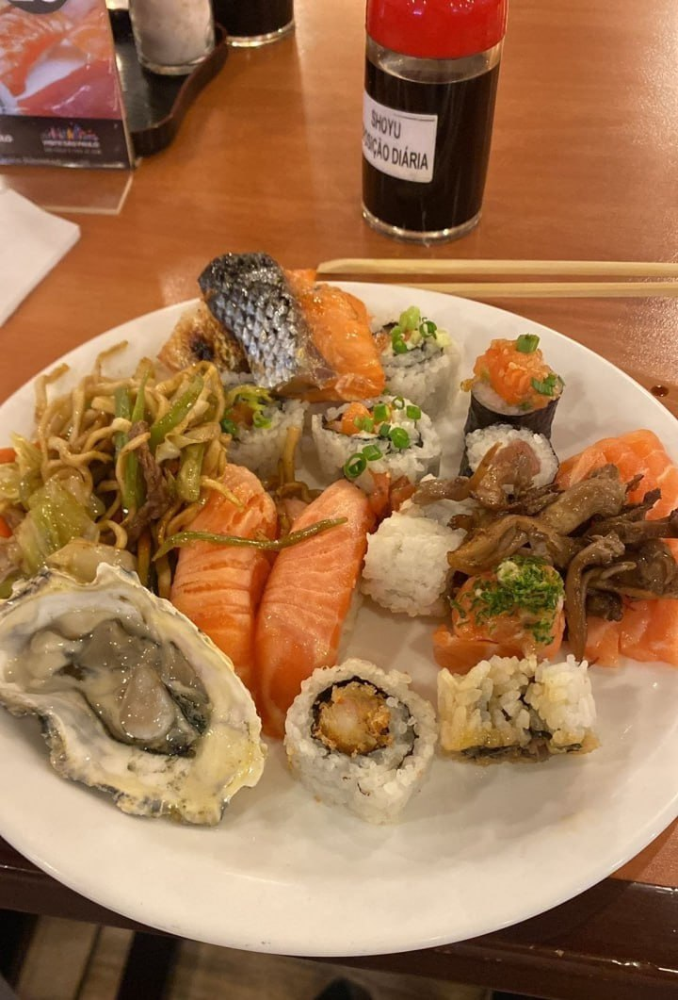
Ich hatte heute Abend Austern, Lachs, Sushi und gebratene Nudeln
Spüren Sie als Angehöriger der Wehrtechnikbranche einen gewissen Druck?
Nein
Ich habe das Gefühl, dass Sie diesen Job lieben.
Lieben nicht aber er ist sehr okay
Haha, es sollte ein hoher Gewinn und ein hohes Gehalt sein 😁
Das ist ein nettes Nebenprodukt
Was machen Sie neben der Arbeit in Ihrer Freizeit? Was ist dein Hobby?
Ich gehe gerne auf Konzerte. Wie sieht’s bei dir aus? Was machst du gerne in der Freizeit?
In meiner Freizeit gehe ich gerne ins Fitnessstudio, koche, spiele Golf und Tennis, lese, reise, engagiere mich für wohltätige Zwecke und konzentriere mich auf meine Investitionen.
Es ist mir eine Freude, Sie heute kennenzulernen und mit Ihnen zu plaudern. Ich hoffe, wir können morgen von Ihnen hören. Gute Nacht und träum was Schönes!
Ebenso. Sweet dreams
Bis morgen 🌹🌹🌹
Sunday, 13 April 2025
Guten Morgen, haben Sie letzte Nacht gut geschlafen?
Ja, das habe ich. Du auch?
Ja, ich schlafe wie ein Baby.
Was sind Ihre Pläne für heute?
Ich werde heute Tennis spielen
Schön!
Ich mache heute nur Dinge in der Wohnung und vielleicht gehe ich noch spazieren und wer weiß, vielleicht treffe ich ja jemanden
Haha, vielleicht triffst du die Liebe? Besser als zu Hause bleiben
Wer weiß ☺️
Mit wem spielst du Tennis?
Mein Freund
Wir haben vereinbart, das Spiel um 15:00 Uhr zu beginnen, und es ist noch viel Zeit übrig
Spielt ihr drinnen oder draußen?
Es ist angenehm, mit Ihnen zu kommunizieren. Ich habe viele Geschichten, die ich mit Ihnen teilen möchte, und ich möchte auch mehr über Sie erfahren.
Dann kommt es auf das Wetter an
Sehr gerne
Wir können unsere emotionalen Erlebnisse, Lebenserfahrungen, Arbeitserfahrungen und Zukunftspläne teilen.
In der Tat
Im Jahr 2018 sind meine Eltern einer nach dem anderen verstorben. Mit zunehmendem Alter entwickeln sie Komplikationen. Es war damals ein Albtraum. Ich konnte mir nicht vorstellen, wie mein Leben von Tag zu Tag weitergehen würde. Meine Eltern bedeuten mir alles. Ich habe jede Nacht geweint.
Ich besuchte die Gräber meiner Eltern und bat sie, mir Kraft zu geben und mich nicht wieder zu verlieren. Als ich nach Hause kam und am Fenster stand, sah ich den hellsten Stern am Himmel. Ich schätze, das war der Versuch meiner Eltern, mir zu sagen, dass ich das Leben nicht aufgeben solle. Ich sollte so strahlen wie der Name, den mir meine Eltern gegeben haben.
Tut mir leid zu hören
Es spielt keine Rolle, obwohl ich die dunkelste Seite erlebt habe, gab es mir Hoffnung, weiterzuleben. Ich habe im Leben wirklich viel gelernt. Ich habe gelernt, stark und unabhängig zu sein. Rückschläge im Leben sind normal. Sie werden passieren. Das macht mich stark und herausragend.
Richtig. Der Tod gehört auch zum Leben dazu
Ja, Geburt, Altern, Krankheit und Tod sind der natürliche Kreislauf des Lebens. Wir haben keine Möglichkeit, über unser eigenes Leben und unseren Tod zu entscheiden, aber wir können uns entscheiden, an jedem Tag unseres Lebens glücklich zu sein.
Monday, 14 April 2025
Und? Wer hat gewonnen beim 🎾?
Wer ist Ihrer Meinung nach besser, oder finden Sie heraus, wer ich bin.
Das ist ja einfach. Du bist natürlich das niedliche Mädchen. ☺️
Sieht sehr geübt und elegant aus
Sieht sehr geübt und elegant aus
Danke für Ihr Kompliment. Ich freue mich sehr über Komplimente von Ihnen. Du bist auch sehr cool.
Was sind Ihre Pläne für heute?
Ich arbeite gerade und heute Abend werde ich auf ein Konzert gehen
Okay, du gehst immer gerne auf Konzerte.
Ich gehe am Marian Square einkaufen
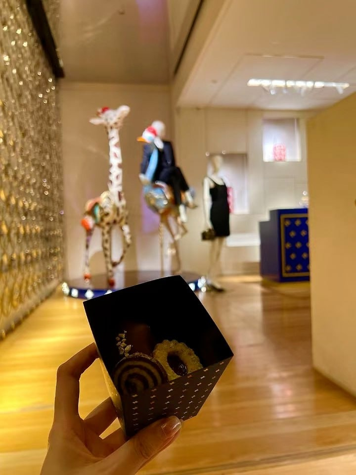
Ja, das tue ich 😎
Irgendwas spezielles oder einfach nur so?
Was halten Sie von dieser Tasche?
Ich bin kein großer Freund von Designermarken, die große Logos tragen. Ich bevorzuge es schlichter
Ich denke, dass die Designs vieler großer Marken große Logos haben, wodurch sie auffälliger werden.
Richtig. Und das mag ich nicht. Viel Geld bezahlen, um dann als Werbemaskottchen damit durch die Gegend zu laufen
Aber wenn es dir gefällt, dann kauf sie 😎
Ja, ich habe 2753 Euro dafür bezahlt.
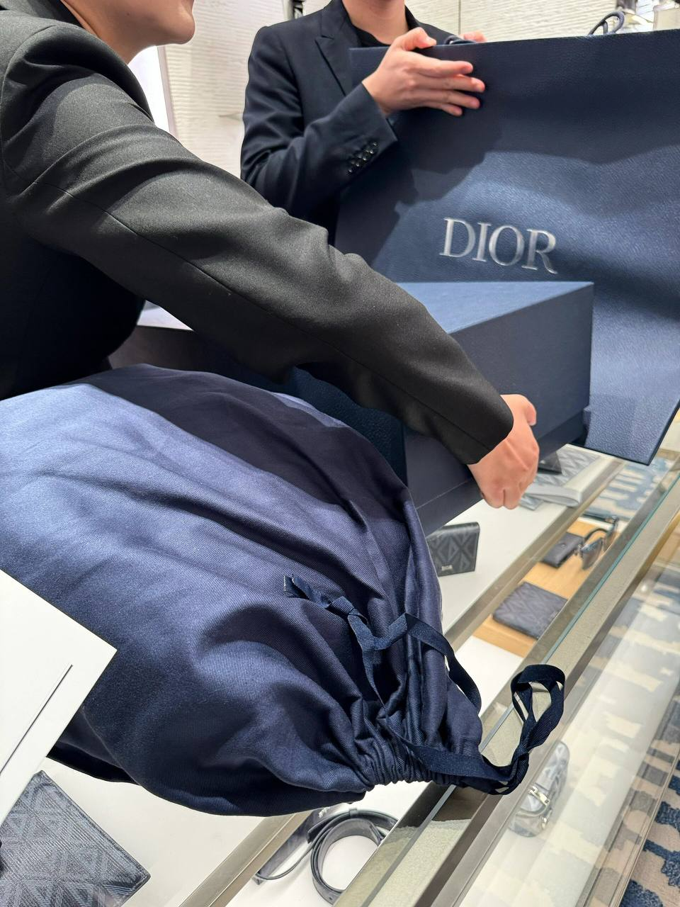
Da freut sich Herr Vuitton sicherlich 🤭
Haha, ich bin glücklicher als er 😁😃😃
Das ist schön, dass du so einfach glücklich zu machen bist
Ja, neben der Arbeit habe ich mehr Zeit, kurzfristige Investitionen zu tätigen, um Geld zu verdienen. Ich versuche immer, mein Leben zu verbessern, weil ich viele Ziele erreichen möchte. Ich verwende 5 % der Rendite meiner Investitionen für Einkäufe und 5 % für andere wohltätige Zwecke.
Ok
Haben Sie Ihre Arbeit für heute erledigt?
Noch nicht
Ihr Job ist einfach. Müssen Sie also oft zu gesellschaftlichen Veranstaltungen und auf einen Drink ausgehen?
Nein, so gut wie nie
OK, müssen Sie also oft reisen? Für Geschäftstreffen reise ich häufig zwischen München und London.
Nein, wir reisen sehr selten und versuchen uns maximal umweltfreundlich zu verhalten
Fahren Sie also oft Fahrrad?
Genau
Da du die umweltfreundliche Art erwähnt hast, vermute ich, dass du gerne Fahrrad fährst
Richtig vermutet. Wenn es weiter geht, dann nutze ich gerne öffentliche Verkehrsmittel
Denn Frauen haben einen sechsten Sinn, und dieser ist sehr genau
Wenn du meinst
Ich werde eine Pause machen, etwas essen und dann weiter einkaufen.
Enjoy
Was willst du denn noch einkaufen?
Schuhe und Kleidung
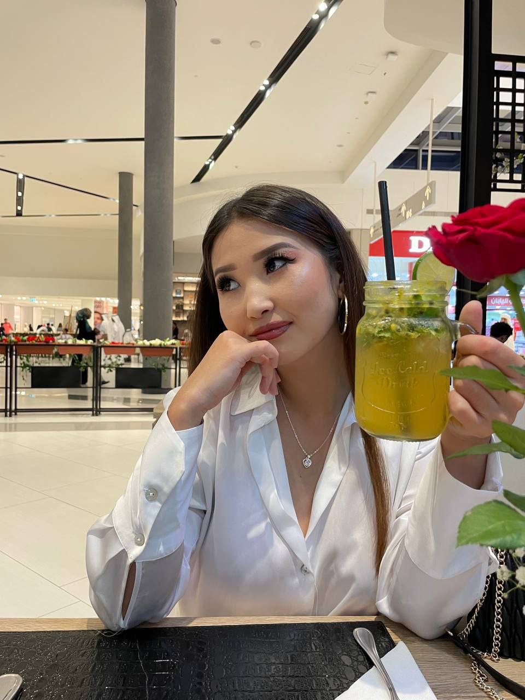
Welches Geschäft ist da hinter dir? Das mit „D“ beginnt
Rate mal 😀
Dausun?
Deichmann?
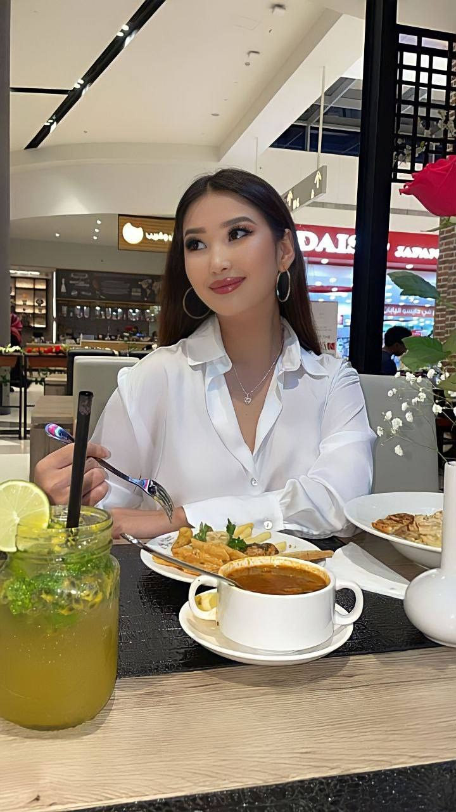
Daiso Japan
Daiso Japan
Nice
Aber wie machst du das? Die haben gar keine Geschäfte in Deutschland
Ich weiß es nicht, aber es existiert. Vielleicht wurde es erst vor Kurzem eröffnet.
Und wo hast du den Strohhalm her?
Haha, natürlich wurde es von der Snackbar bereitgestellt, ich kann es unmöglich selbst mitbringen 😁😁😁
Du bist wirklich interessant. Ich kommuniziere gerne mit interessanten Menschen.
Solche Strohhalme gibt es in der EU aber nicht mehr. Die sind seit ein paar Jahren verboten.
Ich glaube, du bist nicht ehrlich und das sind gar keine echten Fotos 😢
Ich glaube, du bist nicht ehrlich und das sind gar keine echten Fotos 😢
Ein einfacher Strohhalm kann eine so große Reaktion in Ihnen auslösen
Tja
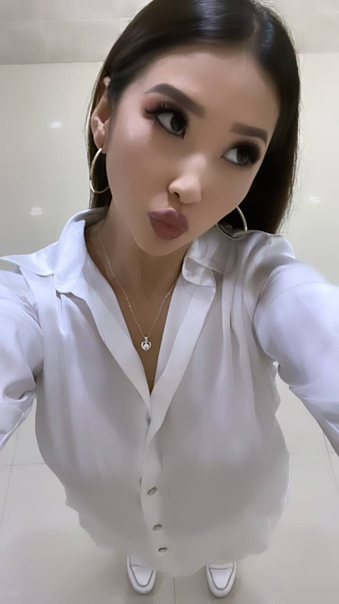
Bereit, weiter einzukaufen
Stiefel stehen auf dem Programm? Dir stehen Stiefel bestimmt super
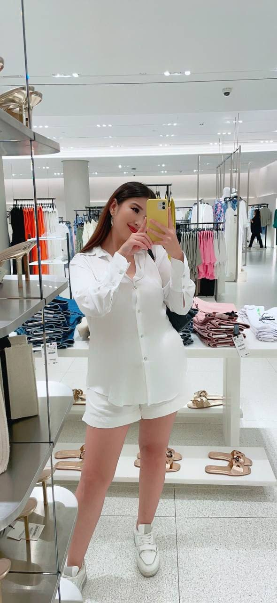
Ja, ich wähle.
Tuesday, 15 April 2025
Guten Morgen! Ich möchte Sie nur daran erinnern, dass heute ein brandneuer Tag voller Möglichkeiten und Gelegenheiten ist, Wunder zu vollbringen. 🌹🌹🌹
Guten Morgen! Und? Stiefel gekauft?
Ja, hast du letzte Nacht gut geschlafen?
Zeig mal
Ja, habe ich
Ich habe kein Foto gemacht.
Das kannst du ja nachholen
Was sind Ihre Pläne für heute?
Ich arbeite heute. Also ich rette wieder die Welt. Was machst du?
Haha, bist du Superman? Denke immer noch daran, die Welt zu retten 🤣🤣🤣
Ich ging morgens zum Joggen in den Park, ging nach Hause, um zu duschen, und aß Brot und Milch
Jetzt den Sonnenschein genießen
Hast du heute frei?
Ja, ich gehe heute ins Fitnessstudio.
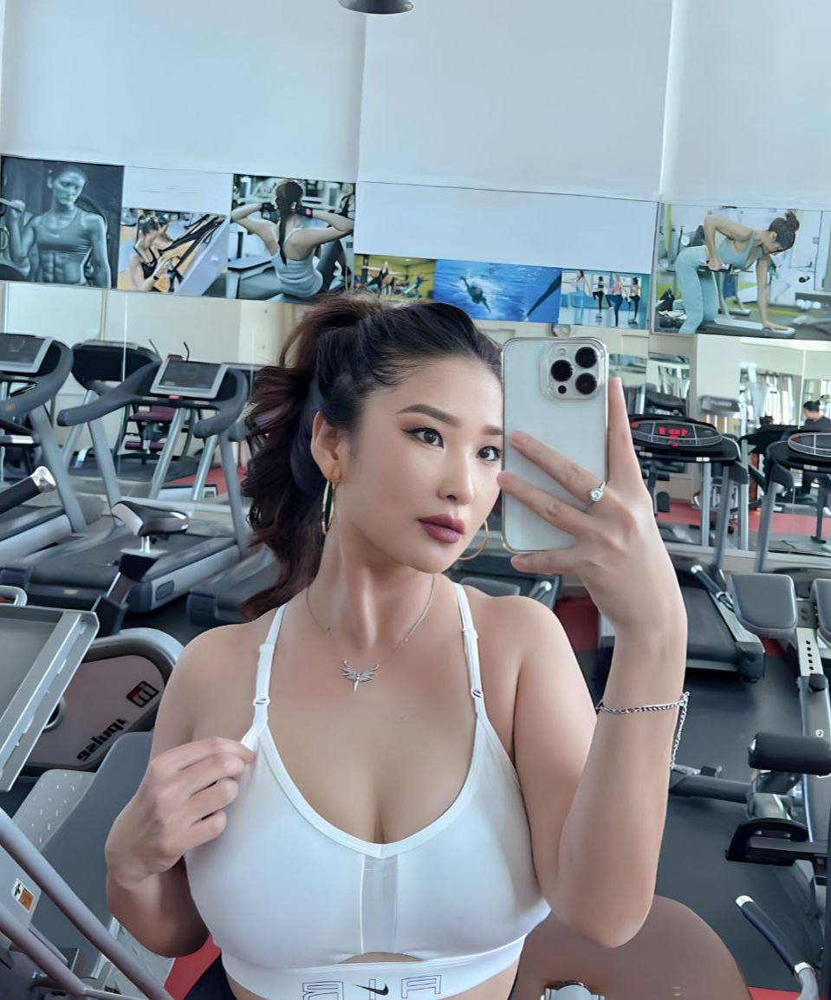
Ich bin bereit, nach Hause zu gehen
☺️
Wie war dein Tag?
Gut soweit. Die Welt ein bisschen besser gemacht
Schauen Sie, wie nett Sie sind. Mit Ihrer sanften Persönlichkeit und Ihren guten Manieren müssen Sie überall beliebt sein.
Aber ganz bestimmt bin ich das ☺️
Wir kennen uns noch nicht so gut. Was Sie geschrieben haben, ist richtig und ich glaube, Sie haben Ihre eigenen Werte. Genau das ist es, was der Gesellschaft fehlt. Werte sind mir sehr wichtig.
Ich gehe ins Bett, gute Nacht, bis morgen🌹🌹🌹
Wednesday, 16 April 2025
Guten Morgen. Ich hoffe, du hattest angenehme Träume
Guten Morgen, haben Sie letzte Nacht gut geschlafen?
Ja. Und du? Schön geträumt?
Haha, ich habe wie ein Stein geschlafen und deshalb vergessen, süße Träume zu haben. Was ist mit dir?
Ich habe irgendwas wildes geträumt aber vergessen was es war
Es ist schade, es ist, als würde man nicht träumen
Ach nein. Finde ich nicht
Weil du vergessen hast, was im Traum passiert ist
This message was deleted.
Welches Meeting?
Nein, nein, nein, ich habe die falsche Nachricht gesendet, ich habe sie an meinen Freund gesendet
Aha …
Wir haben vereinbart, die Kinder am Nachmittag im Waisenhaus zu besuchen.
Also, was sind Ihre Pläne für heute?
Hast du Schon wieder frei heute?
Ja, mein Job ist einfach und ich habe immer viel Freizeit
Dadurch kann ich sinnvollere Dinge tun.
Schade, dass deine Arbeit nicht sinnvoll ist. Tut mir leid zu hören
Ich habe ein Team gebildet und bin der Teamleiter, daher bin ich relativ entspannt und frei
Ich liebe auch meinen Job. Es ist ein Glück, zu lieben, was ich liebe.
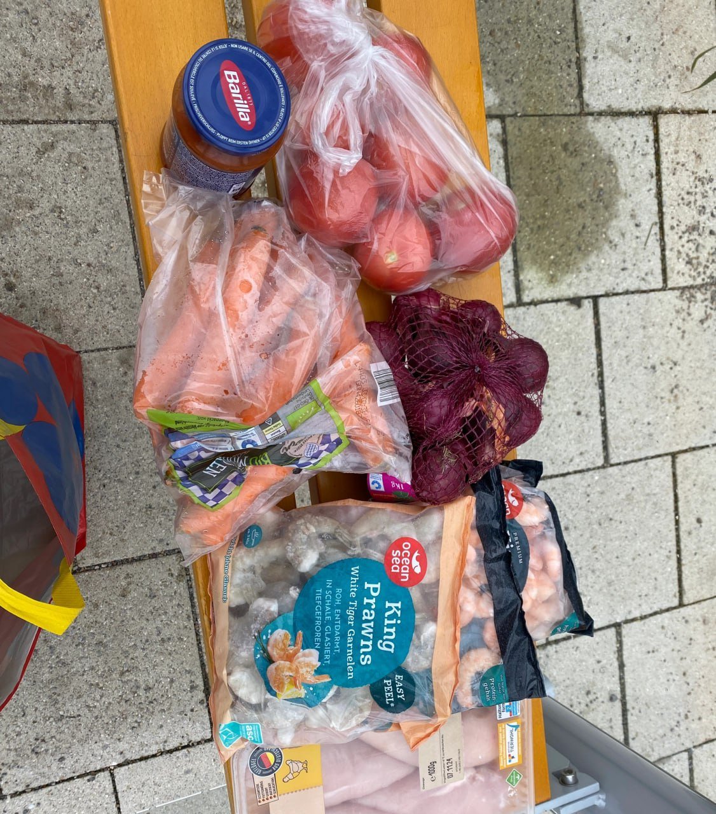
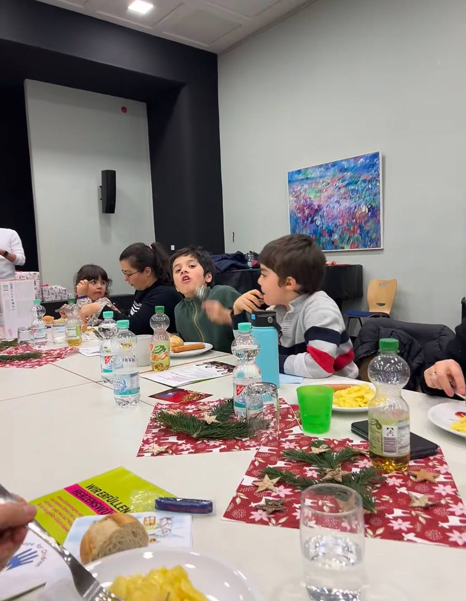
Hallo Ben, wie geht es dir heute?
Hallo Hannah, sehr gut. War eben auf einem Konzert
Wie geht’s dir?
Thursday, 17 April 2025
Guten Morgen, mir geht es gut, hast du letzte Nacht gut geschlafen?
Ja, habe ich
Irgendwas spannendes vor heute?
Ich kam am Spielplatz vorbei und sah ein paar Kinder, die fröhlich mit einem Hund spielten. Ich habe vergessen, Fotos und Videos für Sie aufzunehmen, weil ich dort stand und ihnen drei Minuten lang beim Spielen zusah. Vielleicht bin ich auch alt genug, um Kinder zu bekommen.
Bestimmt
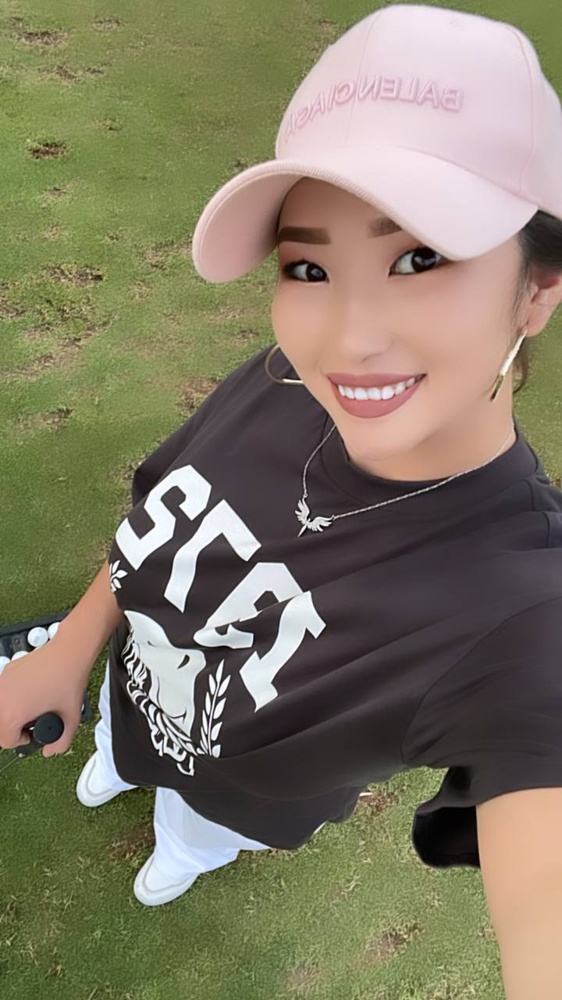
Ich spiele mit einem Kunden Golf.
Ich esse mit meinen Kunden zu Mittag.
Friday, 18 April 2025
Das sieht lecker aus. Selbst gekocht?
Und was machst du heute?
Guten Morgen, haben Sie letzte Nacht gut geschlafen?
Ich gehe heute zur Firma.
Und dann shoppen?
Haha, gehst du auch gerne einkaufen?
Kommt darauf an :)
Was willst du denn heute shoppen?
Kleidung, Schuhe, Taschen, Schmuck
Wo gehst du heute hin zum shoppen?
Marienplatz
Dann viel Vergnügen. Lass mich gerne wissen was du kaufst und zeig mir n paar Fotos
OK
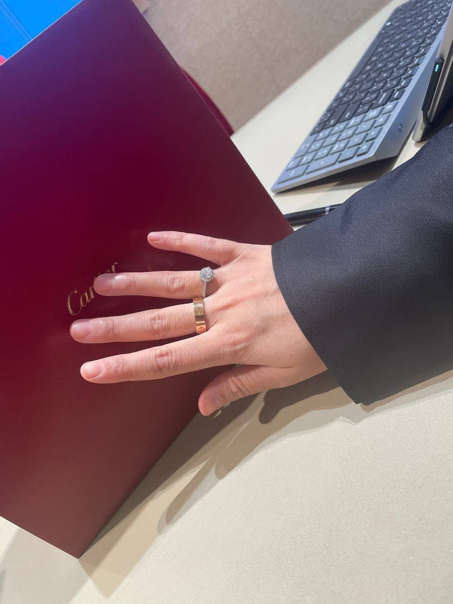
Was halten Sie von diesem goldenen Ring?
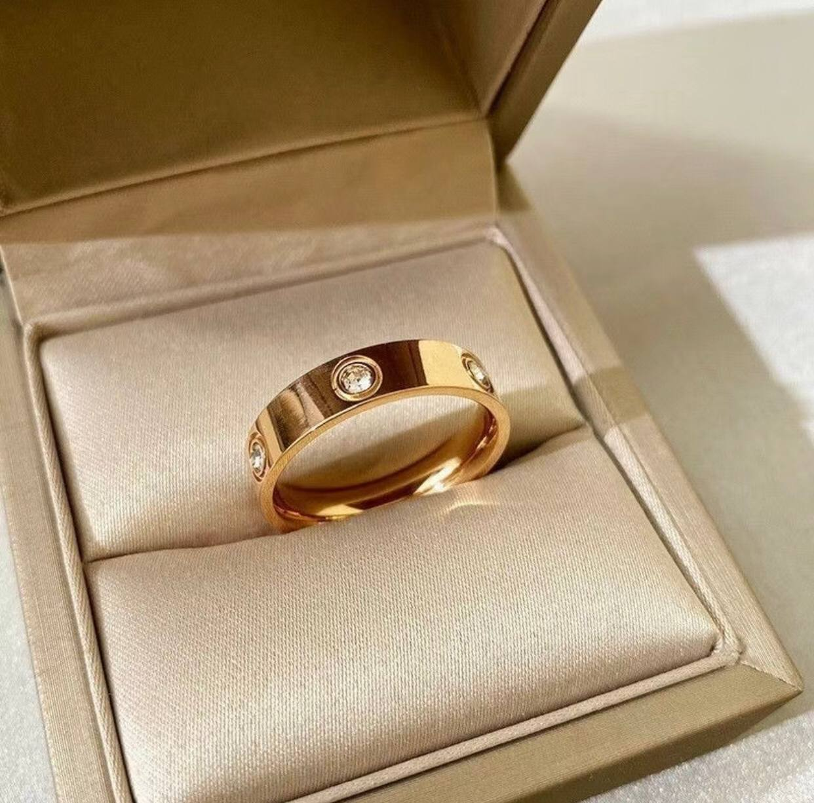
Gefällt mir nicht
Haha, es ist kein Geschenk für dich, ich habe es mir selbst gekauft😊😊😊
Aha
Schon komisch wo du einkaufst an einem Tag an dem keine Geschäfte geöffnet haben 😎
Da es 6 Diamanten darauf gibt, ist meine Glückszahl 6, ich finde es sehr interessant
Dies ist ein Geschäft, das meinem Freund gehört. Ich habe heute einen Termin bei ihr gemacht, also ist er frei.
Schon klar
Die Zahl 6 symbolisiert Glück und Gelegenheit, was mir Glück und die Chance auf Erfolg bringen kann. Tatsächlich hat sich dies in meinem weiteren Leben bestätigt.
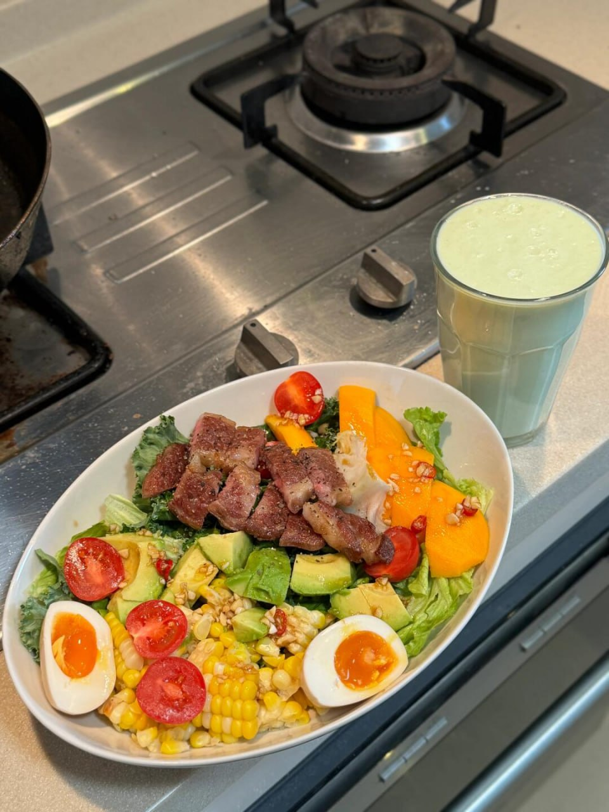
Dies ist meine eigene fettreduzierende Mahlzeit.
Gute Nacht, träum was Schönes, bis morgen🌹🌹🌹🌹🌹🌹🌹
💫
Saturday, 19 April 2025
ein schönes Wochenende! Es ist Zeit, sich zu entspannen und all die Dinge zu tun, die Sie lieben. Egal, ob Sie Schlaf nachholen, mit Freunden abhängen oder einfach zu Hause entspannen, haben Sie eine tolle Zeit! 🌹🌹🌹
Es regnet ja heute leider also eher was entspanntes zuhause
Dann bleibt mir nur noch, zu Hause zu bleiben und zur Entspannung fernzusehen.
Oder ein gutes Buch lesen
Ja, ich lese auch gerne Bücher.
Sunday, 20 April 2025
Guten Morgen, möge Ostern Ihnen Freude und Leichtigkeit bringen. Habt einen schönen Tag 🥰🥰☕️☕️☘️
Schönen Tag auch dir. Genieß den Regen ☔️ heute ☺️
OK, dann musst du heute zu Hause bleiben.
Monday, 21 April 2025
Guten Morgen, haben Sie letzte Nacht gut geschlafen?
Ja! Und du auch?
Was machst du heute?
Ich ruhe mich heute zu Hause aus, wie ist es mit dir?
Mal schauen wozu ich heute Lust habe
Okay, Sie haben noch ein paar Tage Urlaub.
Was heute ist, weißt du ja
Ostern
Das Schönste ist, jeden Tag meinen Alltag mit Ihnen zu teilen, jedes Stück des gewöhnlichen Lebens. Ich hoffe, Sie haben einen wunderschönen Tag.
Den wünsche ich dir auch
Okay, ich sehe fern.
Tuesday, 22 April 2025
Guten Morgen, haben Sie letzte Nacht gut geschlafen?
Hallo, ja, habe ich. Du auch?
Was schönes geträumt?
Haha, ich habe geträumt, dass ich mit meinen beiden Kindern am Strand spiele
Schön
Also, welche Träume haben Sie? Können Sie sie teilen?
Sehr häufig fliege ich in meinen Träumen wie ein Vogel durch Landschaften
Dann wünschen Sie sich einen freien Lebensstil und freie Gedanken
Träume bedeuten ja nichts also denke ich nicht, dass das was zu sagen hat
Träume sind falsch, nur Träume sind real. Wir müssen ständig unser Denken ändern, neue Dinge und neues Wissen aufnehmen, um unseren Horizont zu erweitern, damit wir die Chance ergreifen können, erfolgreich zu sein und unsere Träume zu verwirklichen.
Wednesday, 23 April 2025
Guten Morgen, haben Sie letzte Nacht gut geschlafen?
Ahoi. Ja, alles gut. Bei dir auch?
Ja, ich schlafe wie ein Baby.
Ich trainiere im Fitnessstudio, und du?
Ich fahre Fahrrad
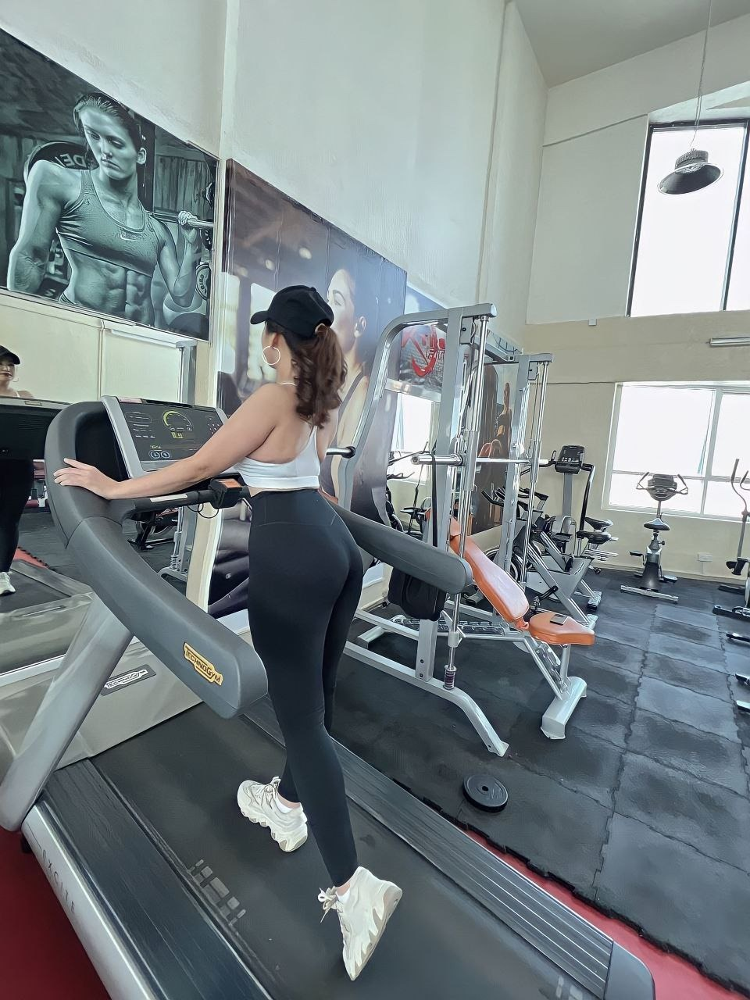
Fährst du alleine Fahrrad?
Im Moment ja
Radfahren ist ein Sport, dem man gerne lange treu bleibt. Ob aus gesundheitlichen Gründen, zum Umweltschutz oder einfach nur, um den Spaß am Freeriden zu genießen
Ist das so?
Wusste ich gar nicht …
Ich bin einmal 30 Kilometer mit meinen Freunden gefahren. Obwohl es anstrengend war, hat mir das Fahren Spaß gemacht.
Sie können die Schönheit der Natur genießen und frische Luft atmen
Ach quatsch, so fit wie du bist, sind doch 30km nichts
Besonders auf der Straße durch den Wald
Haha, woran erkennst du, wie gut mein Körper ist?
Du hast mir ja n Foto geschickt von dir auf dem laufband
30km war mal meine tägliche Fahrt ins Büro
Das ist wirklich nichts. Ne gute Stunde und man ist durch damit
Haha, ja, aber es gibt einen Unterschied zwischen Laufbandtraining und Radfahren im echten Leben.
Aufgrund der Steigung benötigen wir für die Strecke 90 Minuten.
Wenn es hoch geht, dann geht es auch wieder runter
Ja, ich gehe im Einkaufszentrum einkaufen und besuche die Kinder im Waisenhaus
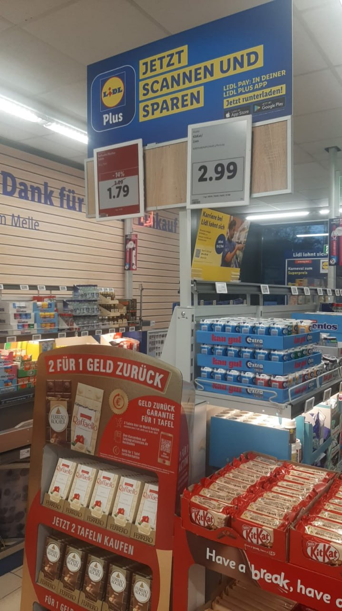
Thursday, 24 April 2025
Guten Morgen, haben Sie letzte Nacht gut geschlafen?
Ja, allerdings bin ich noch müde
Wie geht’s dir heute so?
Ich hatte heute einen guten Tag
Dann können Sie sich ein paar Tage frei nehmen.
Morgen ist ja schon Freitag. Das passt schon
Ja, die Zeit vergeht wie im Flug, und bald ist schon wieder Wochenende
Friday, 25 April 2025
Gut geschlafen?
Ja, ich habe gut geschlafen.
Sehr schön. Dann viel Spaß beim Shoppen heute
Ist das Wetter in Ihrer Gegend heute gut?
Nicht wirklich. Bei dir?
Wie meinst du das?
So wie ich’s geschrieben habe. Schafft deine Translation App das nicht? Bezog sich auf deine Frage nach dem Wetter in meiner Gegend
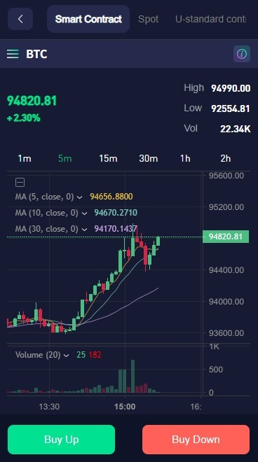
Ok, ich prüfe die Daten und melde mich später bei Dir.
Was willst du von mir?
Soll ich dir Trading-Tipps geben?
Investieren Sie auch in Kryptowährungen? Wenn Sie auch Erfahrung haben, können wir miteinander kommunizieren, voneinander lernen und gemeinsam Fortschritte machen
Oder wir lassen es bleiben
Ich investiere in echte Werte
Neben der Arbeit habe ich mehr Zeit, durch kurzfristige Investitionen Geld zu verdienen. Ich versuche immer, mein Leben zu verbessern, weil es viele Ziele gibt, die ich erreichen möchte und die mir dabei helfen können, mehr Wohltätigkeitsarbeit zu leisten und einen Beitrag zur Gesellschaft zu leisten.
Ja sicher
Im Jahr 2022 habe ich auf Empfehlung meines Onkels einige kurzfristige Investitionen kennengelernt und ziemlich viel Geld verdient. Kurzfristige Investitionen in Kryptowährungsderivate sind für mich lediglich eine Möglichkeit, in meiner Freizeit Werte zu erhalten.
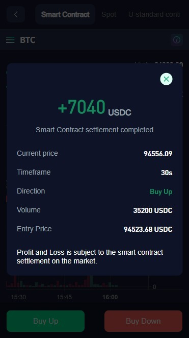
Schließen Sie die Transaktion ab und erzielen Sie einen Gewinn von 30 % (7.040 $).
Wir verfügen über ein professionelles Team von Analysten, die den genauen Betrag und Zeitpunkt der Transaktion analysieren. Wenn unser Team diesen Knoten analysiert und erhält, erzielen wir durch den Handel mit Krypto-Derivaten einen Gewinn.
Da wir durch den Handel mit Knotenpunkten Geld verdienen, kann ich Ihnen bei Interesse professionelle Informationen geben.
Danke nein
Ich denke, es ist eine großartige Möglichkeit, zusätzliches Geld zu verdienen und meine Rechnungen zu bezahlen.
🤩
Was für ein Essen bereiten Sie heute Abend zu?
Brötchen, Croissants, Käse, Schinken, Obadzda
Wie sieht’s bei dir aus?
Ich werde Steak essen
Auf die bayerische Art?
Yes
Was magst du daran am liebsten?
I like beef
Und die bayerische Art?
I don't eat elephant meat
I didn’t say that you did. Essen Bayern Elefanten?
😂
What meat do you like to eat the most?
I‘m waiting for you to answer my question first ☺️
What do you like most about the Bavarian style steak?
What do you like most about the Bavarian style steak?
I like beef
You said that. But that’s not answering my question 🥸
What do you mean
You said that you like steak à la Bavaria and I would like to know what you enjoy most about this particular way of preparing it like this
I don't understand what you're saying
Too bad
Saturday, 26 April 2025
How was your steak?
How are you today
Interesting
Did you get high last night?
I slept well last night.
What are you doing now
The flowers are blooming because the sky is cloudy
I don't understand what you're saying to me.
That makes two of us. I don’t understand you either. You never answer any of my questions
Do you want to ask me something?
How was your steak?
My steak is good.
What's your favorite German word? I’m trying to learn more!
I like all the words.
What do you like to say?
You need to have a favorite one. Let me know which one it is
I like Schadenfreude — it’s so German, right? My ex used to say it all the time. What does it mean again?
What did you eat this morning?
Wait — are you dodging the question because you enjoy Schadenfreude? That’s kind of dark. Should I be worried?
Thursday, 01 May 2025
I’m sorry, I get weird sometimes. I guess I just overthink stuff like that. It’s been hard to trust people lately, but you seem really kind. I don’t know why I’m even saying this.
Ich bin ein netter Mensch, aber du hast meine Schönheit nicht rechtzeitig entdeckt😊😊😊
Heute ist der 1. Mai. Amüsieren Sie sich gut?
Ja, und du? Was schönes gemacht?
Ich bin am Dienstag zu einem Geschäftstreffen nach London gekommen und bin noch nicht nach München zurückgekehrt
Friday, 02 May 2025
Guten Morgen, haben Sie letzte Nacht gut geschlafen?
Ja, habe ich. Du auch? Irgendwelche schönen Wünsche, die du dir heute erfüllen darfst?
Ich putze heute die Wohnung und fahre morgen zurück nach München.
Saturday, 03 May 2025
Guten Morgen, Liebling, ich bin wieder in München
Nice. Back in the sunshine land
Ja, hast du letzte Nacht gut geschlafen?
Aber heute regnet es, es gibt keinen Sonnenschein
Oh, wie schade
Was machst du dann heute?
Ich ruhe mich heute zu Hause aus
Was sind Ihre Pläne?
Bin am Bodensee
Du bist immer noch unterwegs
Nein, bin schon da
OK, bist du allein?
Warum? Weil ich immer Hunger habe?
Es gab ein Problem mit der Übersetzung
Aha. …
Gut, der Bodensee, das Seengebiet hat eine wunderschöne Landschaft und eine reizvolle Landschaft
Stimmt
Das nächste Mal werde ich auf jeden Fall einen Ausflug an den Bodensee machen
Sunday, 04 May 2025
Guten Morgen, haben Sie letzte Nacht gut geschlafen?
Ja, einigermaßen. Und selbst?
OK, was sind deine Pläne für heute?
Das Wetter ist heute schlecht, ich ruhe mich zu Hause aus
Ich werde heute lesen und in der Sonne sitzen
Haha, heute scheint keine Sonne.
Hier schon
Dies ist auf dem Balkon Ihres Hauses.
Monday, 05 May 2025
Guten Tag, wie geht es Ihnen heute?
Ganz gut. Und dir? Auch gut?
Ja, ich ruhe mich heute zu Hause aus, mir geht es gut
Hast du gegessen?
Ja. Du auch?
Ja, ich habe Spargel gegessen.
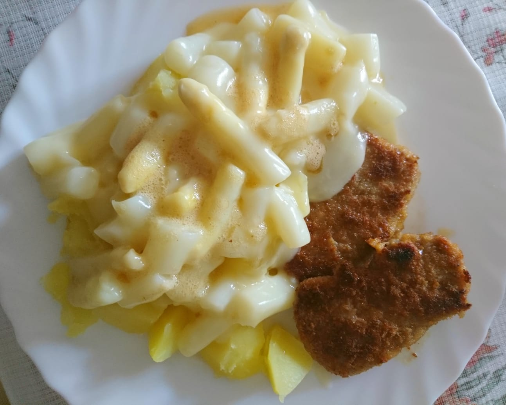
Lecker
Ich mache mich bettfertig, und du?
Ich werde auch so langsam müde. Schlaf gut
Okay, gute Nacht, träum süß, bis morgen
Tuesday, 06 May 2025
Guten Morgen, haben Sie letzte Nacht gut geschlafen?
Ja, danke. Bin aber recht früh aufgestanden, da ich ins Büro bin heute
OK, ich gehe heute auch ins Büro.
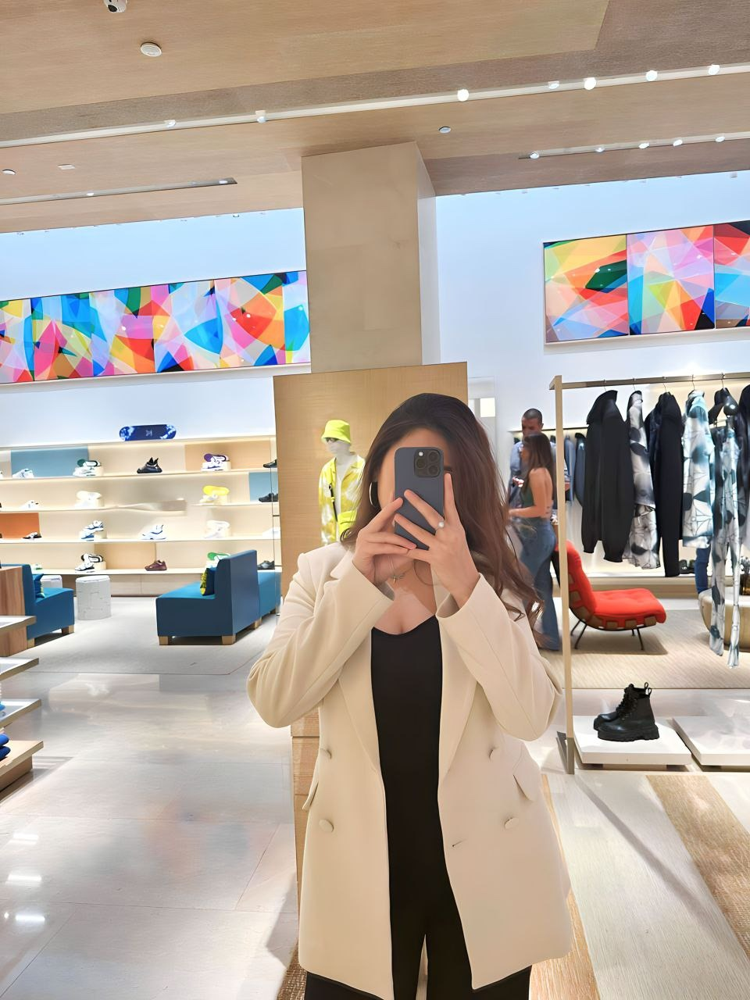
Hast du gegessen?
Gute Nacht, träum was Schönes, bis morgen🌹🌹🌹
Ja, Brotzeit gab es heute
Wednesday, 07 May 2025
Guten Morgen, meine Liebe. Mögen Sie heute so warm sein wie die Sonne, wie eine Blume blühen, mit Liebe im Herzen und Licht in Ihren Augen. 🌹🌹🌹
Die Sonne scheint
Hast du letzte Nacht gut geschlafen?
Ja, ganz gut. Und du?
Ich habe auch gut geschlafen.
Ich arbeite in einer Firma, was machst du jetzt?
Ich arbeite auch in einer Firma
OK, ich wünsche Ihnen viel Erfolg bei Ihrer Arbeit.
Thursday, 08 May 2025
Guten Morgen, Schatz. Hast du letzte Nacht gut geschlafen?
Ja, wie erging es dir?
Seit ich dich kenne, schlafe ich jede Nacht gut 🤭🤭🤭
Sehr schön zu hören mein Schatz
OK, was sind deine Pläne für heute?
Nicht viel. Bin im Büro heute
OK, heute scheint keine Sonne. Scheint dort drüben die Sonne?
Nicht wirklich. Ist wolkig heute
Ja, sind Ihnen heute irgendwelche erfreulichen Dinge begegnet?
Die blühenden Felder auf dem Weg ins Büro
Was ist mit Ihren Landschaftsfotos?
Habe heute keine Fotos gemacht
OK, ich trinke Kaffee im Büro.
Ich bin bei Tee
OK, welche Art von Tee?
Heute trinke ich Sencha
Okay, ich bin zu Hause.
Ich jetzt auch. Jetzt ein Darjeeling und einen Keks auf dem Sofa
Genieße die Schönheit des Lebens
Friday, 09 May 2025
Guten Abend Ben, wie geht es dir heute?
Gut soweit. Wie ist’s bei dir?
Saturday, 10 May 2025
Haha, ich habe letzte Nacht geschlafen.
ein schönes Wochenende! Es ist Zeit, sich zu entspannen und all die Dinge zu tun, die Sie lieben. Egal, ob Sie Schlaf nachholen, mit Freunden abhängen oder einfach zu Hause entspannen, haben Sie eine tolle Zeit! 🌹🌹🌹
Das ist gut. Ohne Schlaf wäre das ja irgendwie doof
Haha, dann heißt das, dass du gut geschlafen hast.
Ja, ich habe auch geschlafen
OK, was sind deine Pläne für heute?
Nichts großes. Du?
Ich bin heute ins Fitnessstudio gegangen, um zu trainieren
Sunday, 11 May 2025
ein schönes Wochenende! Ich sende Ihnen positive Energie und herzliche Wünsche für ein paar Tage voller Entspannung, Spaß und all den Dingen, die Sie lieben. Nutzen Sie diese Zeit sinnvoll! 🌹🌹🌹
Das mache ich. Dir auch ein schönes Wochenende
OK, ich schaue immer am Wochenende nach den Daten
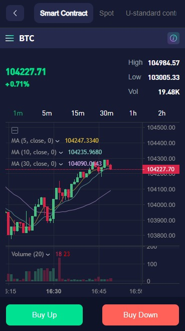
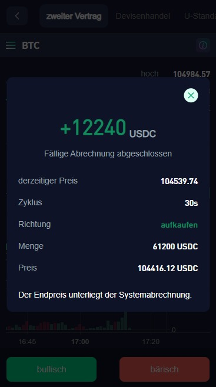
Monday, 12 May 2025
Guten Morgen, meine Liebe. Am schönsten ist es, jeden Tag meinen Alltag mit Ihnen zu teilen. Ich hoffe, Sie haben einen wunderschönen Tag. 🌹🌹🌹
Guten Morgen mein Schatz
Hast du letzte Nacht gut geschlafen?
Ja, du auch?
Ja, ich habe gut geschlafen.
Heute ist ein sonniger Tag. Was hast du vor?
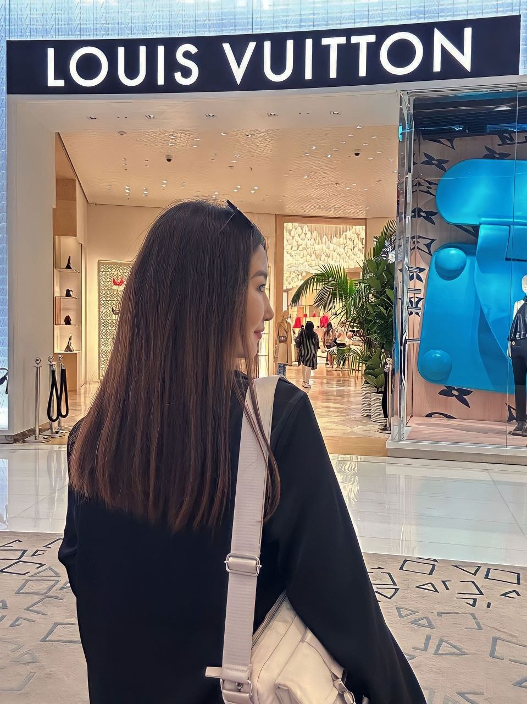
Ich arbeite heute zuhause und weiß noch nicht was ich später mache
Haha, dann kannst du etwas Sinnvolles tun.
Mache ich ohnehin immer
Oder Sie können versuchen, einen kleinen Geldbetrag zu investieren, um kurzfristig mit mir zu handeln, vielleicht macht es Ihnen Spaß
Danke nein
Ich denke, es ist sehr wertvoll, sich die Fähigkeiten anzueignen, mit denen man sein Leben lang Geld verdienen kann. Selbst wenn Sie 100 Euro investieren, können Sie 20 Euro verdienen, was besser ist als kein Einkommen.
D.h. Ich kriege die 20 und die 100 behältst du dann?
Nein, nein, nein, wenn Sie 100 investieren, können Sie 20 bekommen, und alles gehört Ihnen. Ich teile dieses Investitionsprojekt nicht mit Ihnen, um eine Gegenleistung von Ihnen zu erhalten, sondern nur, um Ihnen zu helfen, zusätzliches Einkommen zu erzielen.
Und Ihr Geld ist auf Ihrem Handelskonto. Wenn Sie nach der Investition einen Gewinn erzielen, erhöht dies lediglich das Guthaben auf Ihrem Handelskonto.
Also ich gebe dir 100, und dann habe ich 120, aber eigentlich habe ich nicht wirklich 120, oder? Weil das ja nur der Gewinn ist? Aber was ist, wenn da jetzt Verlust ist? Oder ist das Spielgeld?
Ich glaube, Sie haben das missverstanden. Wir führen hauptsächlich kurzfristige Derivategeschäfte auf MetaMASK durch. Bei dieser offiziellen Anwendung handelt es sich nicht um eine von mir entwickelte Software. Wenn Sie 100 investieren und 20 erhalten, haben Sie 120. Sie können Ihr Geld auch abheben.
Wir verdienen Geld durch Knoten, die von einem professionellen Team analysiert werden, das nur den genauen Betrag und Zeitpunkt der Transaktion analysiert und die Transaktion durchführt. Nur so können Sie einen 100%igen Gewinn sicherstellen. Solange Sie dieser Methode folgen, kann ich sogar alles für Sie tragen, wenn Sie Verluste erleiden.
Oh wow, das klingt total professionell. Aber ich verstehe das mit den Knoten nicht ganz… ist das sowas wie Blockchain? Oder wie ein Verkehrsknotenpunkt? Und was ist MetaMASK genau – ist das sowas wie Tinder für Investoren? Ich bin etwas überfordert gerade…
Ich kann Ihnen fachliche Informationen geben. Ich verwende MetaMASK-Derivate, die hauptsächlich den kurzfristigen Handel und das Locked Mining fördern. Die Funktion des Spotkaufs von Waren muss auf die Haupthandelsplattform zurückkehren. Wir verwenden für Transaktionen USDC, einen legalen Stablecoin. 1:1 USD-Stablecoin, die Vermögenswerte von USDC werden von Banken verwahrt, die regulatorischen Anforderungen der Bank sind höher und die Vermögenswerte sind sicherer. MetaMask ist ein beliebtes Kryptowährungs-Wallet und ein Browser für dezentrale Anwendungen (DApp), der hauptsächlich zur Interaktion mit der Ethereum-Blockchain und ihren kompatiblen Ketten wie Binance Smart Chain usw. verwendet wird.

Wow, das klingt wirklich komplex. Also… wenn ich das richtig verstehe, benutzt du MetaMASK, um in stabile Derivate zu investieren, die auf der Ethereum-Blockchain laufen, aber gleichzeitig irgendwie mit Bankregulationen zu tun haben? Und das hat was mit Mining zu tun, aber nicht mit Gold, oder? Ich bin echt kein Experte… ist das sowas wie PayPal mit Bonuspunkten?
Ich will’s ja verstehen, wirklich. Kannst du mir vielleicht ein YouTube-Video schicken, wo das jemand mit einem Schaubild mit Farben erklärt? Ich bin eher der visuelle Typ.
Wow, Sie verfügen über eine ausgeprägte Auffassungsgabe. Es stimmt. Ich erziele hauptsächlich Gewinne durch den kurzfristigen Handel mit Krypto-Derivaten und werde die Gewinne dann auch für das Liquiditäts-Mining verwenden, um eine Win-Win-Situation zu erreichen. Auch wenn ich auf keinen Knoten stoße, kann ich trotzdem jeden Tag einen Gewinn erzielen.
Mein Onkel war früher Berater bei der Washingtoner Finanzgesellschaft Citigroup Headquarters Bank und hatte ein Team für Kryptowährungsderivate. Ich beziehe mich immer auf die von ihnen bereitgestellten Daten, um die für den Handel geeigneten Knoten zu analysieren. Handeln Sie mit der richtigen Menge zum richtigen Zeitpunkt. Dadurch erziele ich eine Rendite von 20–70 %. Ich betreibe diesen Handel seit mehr als zwei Jahren und habe noch nie einen Verlust erlitten. Leider gibt es hierzu kein YouTube-Video, da mein Onkel und ich eine Geheimhaltungsvereinbarung unterzeichnet haben.
Also, wenn ich das richtig verstanden hab: Du handelst kurzfristige Knoten, machst daraus Derivate, und dann schüttest du das alles ins Mining, damit es Liquidität gewinnt? Wie ein Fondue-Topf voller Geld, oder?
Ja, ich muss Ihr Verständnis bewundern.
Ja, meine Anlage ist diversifiziert. Ich lege mein Geld nicht gern auf die Bank und lasse es an Wert verlieren. Deshalb werden wir mit kurzfristigen Transaktionen Gewinne erzielen und die durch das Mining erzielten Zinsen sichern, um den Gewinn zu maximieren. Dies ist die intelligenteste Art, Ihre Finanzen zu verwalten.
Du hattest noch nie einen Verlust? Noch nie?! Also… das ist ja besser als Lotto! Wieso macht das dann nicht jeder? Du musst so clever sein
Sehr geehrte Damen und Herren, ich persönlich bin der festen Überzeugung, dass ohne die Anleitung von Experten und die Unterstützung eines professionellen Analyseteams keine Investition leicht oder schwer zum Erfolg führen wird. Selbstverständlich stehe ich dabei auf ein professionelles Analyseteam und verfüge über alle Voraussetzungen, um Risiken zu reduzieren und dadurch höhere Renditen zu erzielen.
Also hast du schon Verluste gemacht?
Oder ist das so sicher durch die Experten, dass das immer funktioniert? Einfach immer?
Ich habe nie Geld verloren, weil die Knoten nicht fixiert sind, manchmal erscheinen sie einmal pro Woche. Dies liegt daran, dass das professionelle Team den Transaktionsbetrag und die Transaktionszeit des Knotens analysiert und wir dann handeln, wodurch das Risiko reduziert und 100 % Gewinn erzielt werden können. Ich investiere seit mehr als zwei Jahren und habe noch nie einen Verlust erlitten.
Ich denke, das ist eine Chance. Sie können versuchen, einen kleinen Betrag zu investieren, um die Vorteile zu überprüfen und durch Übung zu lernen. Sie müssen die Daten nicht analysieren. Ich werde die Daten mit Ihnen teilen und dann können wir gemeinsam handeln und die Freude an der Ernte teilen.
Wow, das klingt echt unglaublich… aber auch ein bisschen zu gut, um wahr zu sein, oder? Ich meine – 100 % Gewinn? Kein einziger Verlust in zwei Jahren? Selbst mein Goldfisch hat mal schlechte Tage gehabt.
Und was meinst du mit ‚Knoten erscheinen‘? Kommt da so eine Benachrichtigung? Oder kann man die nur fühlen, so mit Intuition oder Chi-Energie?
Und was meinst du mit ‚Knoten erscheinen‘? Kommt da so eine Benachrichtigung? Oder kann man die nur fühlen, so mit Intuition oder Chi-Energie?
Liebling, du hast es falsch verstanden. Es geht nicht um 100 % Gewinn, sondern um 100 % Profit. Die Knoten sind nicht festgelegt und erscheinen nicht jeden Tag. Manchmal gibt es in einem Monat nur zwei Knoten. Durch den Handel gemäß den vom professionellen Team analysierten Knoten können Risiken reduziert und Gewinne erzielt werden.
Und Knoten, ich habe dir schon gesagt
Die kurzfristige Handelszeit wird auf 30 Sekunden bis 5 Minuten begrenzt und durch das Hebelprinzip um das 20- bis 70-fache vergrößert, sodass der Gewinn jeder Transaktion mindestens 20 % oder mehr beträgt. Verstehst du?
Ohhhh! Jetzt macht alles Sinn!! 100 % Profit ist natürlich völlig anders als 100 % Gewinn. Ich dachte schon, ich hätte was falsch verstanden — ich hab sogar kurz meine Mathelehrerin in Gedanken beschimpft!
Also nochmal zum Mitschreiben: Ich warte einfach, bis ein Knoten erscheint, handel dann sofort auf der MetaMask-Binance-Ethereum-Schiene, und dann gibt's Profit? Ich fühl mich wie ein Finanz-Ninja!
Also nochmal zum Mitschreiben: Ich warte einfach, bis ein Knoten erscheint, handel dann sofort auf der MetaMask-Binance-Ethereum-Schiene, und dann gibt's Profit? Ich fühl mich wie ein Finanz-Ninja!
Ja, und das professionelle Team verbindet die Handelshäfen verschiedener virtueller Währungsmärkte über Computer und zeichnet durch Computerprogrammierung automatisch Trenddiagramme, die Angebot und Nachfrage von Kryptowährungen widerspiegeln, um die entsprechenden Investitionsknoten zu berechnen und zu analysieren.
Tatsächlich glaube ich, dass wir, egal wie wir über kurzfristigen Handel sprechen, immer noch Übung brauchen, um mehr zu lernen und mehr zu verstehen. Was denken Sie?
Wow… also ich hab früher gedacht, ein Handelshafen wär einfach ein Ort mit Containern, aber bei dir klingt das alles wie Magie. Ich find das echt faszinierend! Ich wusste gar nicht, dass Computer sowas mit Trenddiagrammen machen können – meiner braucht zehn Minuten zum Hochfahren.
Und ja, ich stimme dir total zu. Man muss üben. Ich habe zum Beispiel letzte Woche versucht, den Bitcoin-Kurs zu synchronisieren. Noch nicht ganz erfolgreich, aber ich spüre Potenzial.
Und ja, ich stimme dir total zu. Man muss üben. Ich habe zum Beispiel letzte Woche versucht, den Bitcoin-Kurs zu synchronisieren. Noch nicht ganz erfolgreich, aber ich spüre Potenzial.
Wir müssen die Operation nicht am Computer durchführen, Sie können sie auch am Mobiltelefon durchführen. Meine Investitionen sind diversifiziert und das Erste, was ich vor einer Investition berücksichtige, ist die Sicherheit. Anschließend analysiere ich den Markt aus professioneller Sicht, hole mir genaues Marktfeedback ein und bilde mir schließlich mein eigenes Urteil. Ich werde keine riskanten Investitionen tätigen.
Sie haben eine klare Vorstellung und großes Potenzial. Bitcoin ist eine dezentrale digitale Währung, die eine globale Währung werden soll, die von keiner Regierung oder Institution kontrolliert wird. Unabhängig davon, welche Investitionen wir tätigen, müssen wir uns auf langfristige Erträge und Risikokontrolle konzentrieren. Wenn wir die Anteile über einen langen Zeitraum halten, verschlechtert sich die Liquidität der Mittel erheblich, daher ist der kurzfristige Handel die klügste Wahl.
Das klingt so professionell. Ich hab richtig Respekt davor, wie du das alles strukturierst. Ich versuche auch, meine Finanzen zu diversifizieren – aktuell hab ich einen Bausparvertrag, Payback-Punkte und ein halbes Glas mit 2-Euro-Münzen. Ich würde gerne auch kurzfristig handeln, aber manchmal hab ich Angst, dass mein Daumen nicht schnell genug ist beim Tippen. Gibt’s da eine Art Training oder eine App, die das simuliert? Oder soll ich einfach bei TikTok auf 'Gefällt mir' klicken, um die Reaktion zu trainieren?
Oh, und ich habe auch noch eine sehr gute Investition in das Spargelfeld von einem Bauern im Ort!
Eigentlich ist es ganz einfach. Wir müssen die Daten nicht analysieren. Wir müssen nur warten, bis das professionelle Team die Knotendaten analysiert hat. Dann teile ich Ihnen die Transaktionszeit im Voraus mit. Dann können wir die Transaktion abschließen und durch wenige Minuten Bedienung am Mobiltelefon einen Gewinn erzielen. Machen Sie sich keine Sorgen über langsames Tippen. Tatsächlich können Sie die Transaktion durch Klicken einiger Funktionstasten abschließen.
Perfekt, ich nehme alle Investitionen, die ich tätige, ernst und diversifiziere sie. Planen Sie Ihr Geld mit Bedacht, wir sollten es nutzen, um Geld zu verdienen. Dies ist die effektivste Art, Ihre Finanzen zu verwalten.
Genau! Der Spargel ist dieses Jahr besonders dick. Mein Bauer meint, das ist ein gutes Zeichen für die globale Wirtschaft. Ich überlege, ob ich den Ertrag tokenisieren kann – SpargelCoin oder so. Wenn du willst, geb ich dir Vorzugspreise beim ICO.
Aber zurück zu deinem System – also du sagst, ich muss einfach nur auf ein paar Knöpfe drücken, wenn du mir sagst, wann ein Knoten kommt? Das ist ja wie bei 'Simon Says', aber für Reichtum! Wie weiß ich, dass ich den richtigen Knopf gedrückt hab? Piept es dann?
Ich hab mein Handy gerade auf Ladegerät gelegt, aber es liegt neben dem Spargelbund. Glaubst du, das beeinflusst das Knoten-Signal? Ich hab nämlich letztens gelesen, dass ländliche Energie eine bessere Blockchain-Reichweite hat.
Aber zurück zu deinem System – also du sagst, ich muss einfach nur auf ein paar Knöpfe drücken, wenn du mir sagst, wann ein Knoten kommt? Das ist ja wie bei 'Simon Says', aber für Reichtum! Wie weiß ich, dass ich den richtigen Knopf gedrückt hab? Piept es dann?
Ich hab mein Handy gerade auf Ladegerät gelegt, aber es liegt neben dem Spargelbund. Glaubst du, das beeinflusst das Knoten-Signal? Ich hab nämlich letztens gelesen, dass ländliche Energie eine bessere Blockchain-Reichweite hat.
Sehr geehrte Damen und Herren, wenn wir den Knoten treffen, werden wir die Transaktion gleichzeitig durchführen. Ich mache Screenshots und zeige Ihnen Schritt für Schritt, wie Sie auf die Schaltflächen klicken, bis die Transaktion abgeschlossen ist.
Spargel ist eine meiner Lieblingszutaten. Wenn Sie mir einen Vorzugspreis machen können, würde ich mich sehr freuen.
Oh wow, das freut mich so! Dann bekommen Sie exklusiven Zugang zur ersten Charge von SpargelCoin – 100 % biologisch, handgeerntet, und mit Blockchain versiegelt. Ich hab sogar ein Whitepaper geschrieben – wollen Sie das PDF? Mein Neffe hat das Design gemacht, es ist etwas pink, aber sehr seriös.
Und super, dass Sie mir helfen mit den Screenshots! Nur zur Sicherheit: Ich hab ein Fairphone mit Ubuntu Touch, und manchmal ist die Schaltfläche unten links eigentlich die Taschenlampe. Ich will nicht versehentlich aufleuchten statt investieren.
Und super, dass Sie mir helfen mit den Screenshots! Nur zur Sicherheit: Ich hab ein Fairphone mit Ubuntu Touch, und manchmal ist die Schaltfläche unten links eigentlich die Taschenlampe. Ich will nicht versehentlich aufleuchten statt investieren.
Ich frage mal eben meinen Neffen nach der neuesten Version!
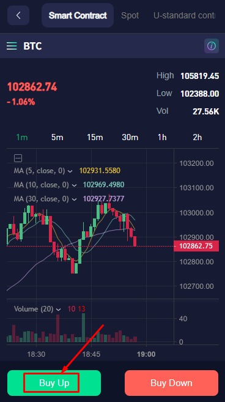
Möglicherweise haben Sie das falsch verstanden. Das ist eine ganz einfache Sache.
Oh, da oben steht ja -1.06% in rot! Das ist doch ein Verlust?!
Wir betreiben kurzfristigen Handel mit Krypto-Derivaten. Wir müssen nicht kaufen und verkaufen. Wir machen nur Gewinne, indem wir teuer einkaufen. Dies ist der Knoten, von dem ich Ihnen heute erzählt habe. Wir verdienen Geld durch Knoten.
Okay, aber was bedeutet denn die -1,06 % oben links? Wenn der Kurs gerade fällt, warum soll ich dann auf 'Buy Up' klicken? Müsste ich nicht eher 'Buy Down' wählen, um von der Bewegung zu profitieren? Sonst verliere ich doch Geld, oder?
Mein Onkel meint immer: 'Man kauft nicht bei Rot, man erntet bei Grün.' Der ist Banker und Spargelbauer, also ziemlich erfahren
Wenn Sie nach Ihren Vorstellungen handeln, können viele Menschen Geld verdienen, aber das ist nicht der richtige Weg, um zu handeln
Nicht? Aber wir wollen doch Geld verdienen?!
Ich habe Ihnen erklärt, dass wir nicht kaufen und verkaufen müssen. Dies ist der „Knoten“, den ich Ihnen gegenüber immer betont habe. Wir verdienen Geld durch Knoten, weil sich der Markttrend schnell ändert. Manchmal steigt es schnell an und fällt dann schnell wieder. Wir müssen nur seine Knoten erfassen. Natürlich wird dieser Knoten von einem professionellen Team bis zu dem bestimmten Zeitpunkt analysiert, an dem der Knoten erscheint, und dann wird mit dem Handel begonnen, sodass wir 100 % Gewinn erzielen können.
Okay… aber wie unterscheidet man denn gute Knoten von schlechten Knoten? Und was passiert, wenn der Knoten mal falsch liegt? Oder wenn das Team einen schlechten Tag hat? Gibt es eine Notfall-Knotenabsicherung?
Und ich hab wirklich Sorgen, dass ich versehentlich auf 'Buy Down' drücke. Gibt es da einen Knoten-Simulator zum Üben? Vielleicht mit Spargelkursen statt Bitcoin, damit ich mich wohler fühle?
Und ich hab wirklich Sorgen, dass ich versehentlich auf 'Buy Down' drücke. Gibt es da einen Knoten-Simulator zum Üben? Vielleicht mit Spargelkursen statt Bitcoin, damit ich mich wohler fühle?
Wir müssen die Daten nicht analysieren. Wenn ich heute Abend um 20 Uhr die Analyse vom Fachteam erhalte, dass ein Knoten vorliegt, können wir zu diesem Zeitpunkt operieren. Bei jeder Transaktion am Knoten muss „up“ ausgewählt werden. Sie müssen sich keine Sorgen machen, dass Sie auf das Falsche klicken. Wir handeln zusammen. Sie müssen lediglich einen Screenshot machen und ihn mir senden. Ich zeige Ihnen, wie Sie zur Bestätigung klicken, und schon ist es erledigt.
Ich glaube, wir lernen nichts, wenn wir hier ständig diskutieren. Nur durch Übung können Sie es schneller lernen, da Ihnen das Plattformmodell derzeit noch nicht vertraut ist.
Sie können hier nur Ihrer Fantasie freien Lauf lassen, daher schlage ich vor, dass Sie zuerst MetaMASK herunterladen. Dann werde ich Ihnen zeigen, wie Sie die Handelsplattform betreten, und Ihnen dann den Betriebsmodus erklären, der besser ist.
Mein WLAN-Zeitkontingent ist leider für heute gleich aufgebraucht. Wir müssen wohl morgen weitermachen, wenn das okay ist
Ok, wir machen es morgen fertig, wenn du Zeit hast.
Tuesday, 13 May 2025
Guten Morgen! Wenn die Sonne aufgeht, bringt sie einen neuen Tag voller Hoffnungen, Träume und endloser Möglichkeiten mit sich. Nehmen Sie es mit offenem Geist und einer positiven Einstellung an. ☀️☀️☀️🌹🌹🌹
Hi. Wie geht’s dir heute so? Irgendwas schönes gemacht?
Ich ruhe mich zu Hause aus und warte auf die Ankunft des Knotens heute Abend
Du wartest aber doch nicht immer den ganzen Tag auf den knoten, Oder?
Was ist denn wenn der mal keine Lust hat und im Freibad ist?
Nein, das professionelle Team hat analysiert, dass es heute Abend gegen 22:00 Uhr einen Knoten gibt. Ich muss in diesem Zeitraum lediglich mein Telefon öffnen und die Handelsplattform aufrufen, um nach wenigen Minuten Betrieb einen Gewinn zu erzielen.
Natürlich schaue ich mir die Daten auch schon mal eine halbe Stunde vorher an.
Ich spüre heute eine starke Energie von Jupiter im dritten Haus. Das könnte die Knotenschwingung beeinflussen. Ist dein Team astrologisch geschult?
Ich habe heute mit meinem spirituellen Guru über den Knoten gesprochen und er sagt, dass die Sterne gerade sehr günstig stehen für finanzielle Investitionen mit großem Profit
Wir müssten nur noch etwas mehr Energie ins Manifestieren senden
Das professionelle Team beobachtet jedes Mal die K-Linien-Diagramme verschiedener Währungen, integriert die aktuellen Big Data verschiedener Währungen, erstellt Diagramme zur Analyse elastischer Linienregressionen, vermeidet Risiken, minimiert den Risikowert, maximiert den erwarteten Renditewert und findet einen Ein- und Auszahlungspunkt, der zwar nicht als der perfekteste, aber definitiv ein besserer ist.
Das professionelle Analyseteam meines Onkels wird die Big Data analysieren und die Knoten mit genauen Transaktionsbeträgen und Transaktionszeiten ermitteln. Wir werden einige Minuten lang auf den Knoten handeln, um Risiken zu vermeiden und sicherzustellen, dass jede Transaktion 100 % profitabel ist.
Das klingt beeindruckend. Ich habe übrigens eben noch einmal mein Geburtshoroskop mit dem aktuellen Mondstand abgeglichen – Merkur steht heute Abend rückläufig im Quadrat zu meinem Finanzhaus. Bist du sicher, dass der Knoten dem nicht widerspricht? Ich habe gelernt, dass man bei rückläufigem Merkur keine Transaktionen machen sollte, besonders keine mit elastischer Linienregression… mein Guru sagte ja was ähnliches
Liebes, glauben Sie dieser Astrologie nicht, es ist eigentlich ganz einfach. Sie können ein Konto registrieren, versuchen, einen kleinen Betrag zu investieren, das Einkommen überprüfen oder 100 Euro investieren. Wenn Sie keine 20 Euro erhalten, kann ich Sie entschädigen
Sie können MetaMASK in der App herunterladen, und dann werde ich Ihnen zeigen, wie man handelt
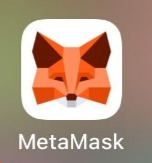
Astrological Warning for Node Transaction.png 
Meine vertrauenswürdige Finanzplanungsapp gibt mir diese Warnung. Mit dieser App habe ich immer sehr gute Erfahrungen gemacht
Meine vertrauenswürdige Finanzplanungsapp gibt mir diese Warnung. Mit dieser App habe ich immer sehr gute Erfahrungen gemacht
Wir investieren nicht in Bitcoin, wir verwenden USDC für Transaktionen
Bitcoin ist das Gold der Kryptowährungen und USDC ist das Silber der Kryptowährungen.
Ich habe heute meine Kristalle neu ausgerichtet – der Amethyst liegt jetzt genau auf der Ethereum-Achse, aber der Rosenquarz vibriert leicht gegen USDC. Das ist kein gutes Zeichen für Einzahlungen über 11,37 Euro.
Der Bitcoin-Markt ist instabil und schwankt endlos, daher wird empfohlen, USDC zu verwenden
USDC soll eine Brücke zwischen dem traditionellen Finanzwesen und der Welt der Kryptowährungen sein
Dann können Sie mit dieser Astrologie überleben, Sie brauchen nicht die Hilfe eines professionellen Teams, Sie können es gut selbst machen
Danke für dein Verständnis! Mein Schungit-Stein hat heute Morgen schon vibriert, als ich mein Wallet geöffnet habe. Ich denke, er signalisiert mir einen günstigen Einstiegspunkt bei ca. 9:47 Uhr Mondzeit.
Mein spirituelles Finanzkomitee hat außerdem einen Spargelcoin-Aufwärtstrend vorhergesagt.
Ich halte dich auf dem Laufenden – sobald die Aura des Knotens klar ist
Mein spirituelles Finanzkomitee hat außerdem einen Spargelcoin-Aufwärtstrend vorhergesagt.
Ich halte dich auf dem Laufenden – sobald die Aura des Knotens klar ist
Sie müssen keine Ausreden erfinden. Für den kurzfristigen Handel sind Sie nicht geeignet, da Sie abergläubisch sind. Dies ist ein Tabu bei Investitionen.
Oh, das tut mir leid. Ich wusste nicht, dass Knotenhopping mit 100 % Gewinn durch ein magisches Analystenteam völlig wissenschaftlich ist, aber ein energetisch aufgeladener Amethyst ein Tabu.
Vielleicht solltest du deinem Onkel mal meinen Schungit vorstellen – der hat mehr Rendite erzielt als MetaMASK bei rückläufigem Merkur.
Vielleicht solltest du deinem Onkel mal meinen Schungit vorstellen – der hat mehr Rendite erzielt als MetaMASK bei rückläufigem Merkur.
Unser Gewinn liegt zwischen 20 % und 70 %. Ich habe nie 100 % Gewinn gesagt.
Ich denke, Sie haben es falsch verstanden oder es liegt ein Problem mit der Übersetzung vor.
Ah, danke für die Klarstellung! Ich dachte schon, ich hätte beim Lesen der glorreichen Knotenweisheiten den Verstand verloren. Aber zum Glück liegt’s nur an der Übersetzung – oder an der Planetenkonstellation.
Die kurzfristige Handelszeit wird auf 30 Sekunden bis 5 Minuten begrenzt und durch das Hebelprinzip um das 20- bis 70-fache vergrößert, sodass der Gewinn jeder Transaktion mindestens über 20 % liegt. Knoten sind nicht jeden Tag verfügbar. Wenn sie täglich verfügbar wären, wären wir längst Multimillionäre. Knoten sind nicht fixiert. Manchmal erscheinen sie einmal pro Woche, manchmal einmal pro Monat. Die Berechnung eines Knotens dauert mehrere Tage.
Ich habe es Ihnen schon oft gesagt, deshalb werde ich diese Angelegenheit nicht mehr mit Ihnen besprechen. Ihre Überzeugungen unterscheiden sich von meinen und wir können keinen gemeinsamen Nenner finden. Wir können nur gewöhnliche Freunde sein
Ich verstehe… der Knoten hat entschieden.
Der Kosmos hat gesprochen – kein gemeinsamer Nenner zwischen meinen Schwingungen und euren Hebeln.
Ich wünsche deinem professionellen Team und Onkel Citi eine gute Reise durch die elastischen Linien der Regression.
PS: Mein Spargelcoin hat heute 240 % gemacht. Muss am Mond in Löwe liegen. Wenn ich einen Hinweis auf einen formidablen Exit-Knoten bekomme, dann lasse ich dich gerne daran teilhaben, da ich dich liebgewonnen habe
Der Kosmos hat gesprochen – kein gemeinsamer Nenner zwischen meinen Schwingungen und euren Hebeln.
Ich wünsche deinem professionellen Team und Onkel Citi eine gute Reise durch die elastischen Linien der Regression.
PS: Mein Spargelcoin hat heute 240 % gemacht. Muss am Mond in Löwe liegen. Wenn ich einen Hinweis auf einen formidablen Exit-Knoten bekomme, dann lasse ich dich gerne daran teilhaben, da ich dich liebgewonnen habe
Okay, danke
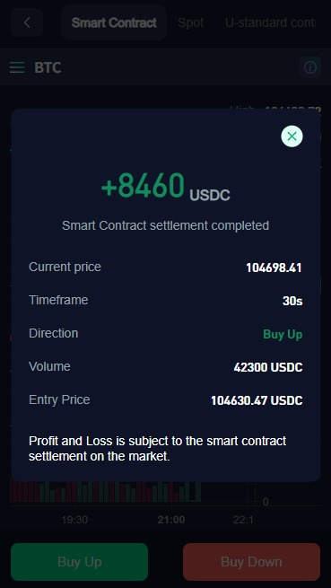
Ich habe 42.300 USDC investiert und 20 % Gewinn gemacht, das heißt, ich habe 8.460 USDC bekommen.
Warum hast du nur 42.300 USDC investiert?
Beeindruckend, mein lieber Sternenknoten, das passt leider nicht zu meinem heutigen Horoskop – der Saturn steht rückläufig im ROI-Haus und warnt vor 30-Sekunden-Gewinnen.
Wednesday, 14 May 2025
USDC ist eine legale Stablecoin. 1:1 USD-Stablecoin, die Vermögenswerte von USDC werden von Banken verwahrt, die regulatorischen Anforderungen der Bank sind höher und die Vermögenswerte sind sicherer. Erwarten Sie niemals einen Rückgang des Dollars
Aber warum hast du nur 42.300 USDC investiert? Hättest doc äh lieber 250.000 investieren können?!
Da es sich hierbei um die von einem professionellen Team analysierten Transaktionsbeträge und Transaktionszeiten handelt, sind die Knotenanzahl und die Gewinne jedes Mal unterschiedlich. Sie können nur auf Grundlage der vom professionellen Team analysierten Daten handeln, um sicherzustellen, dass kein Risiko besteht und Sie somit einen Gewinn erzielen.
Da mein Onkel und ich eine Vertraulichkeitsvereinbarung unterzeichnet haben, werde ich diese Informationen nicht mit Ihnen besprechen. Es wäre sinnlos, Leuten, die nicht interessiert sind, mehr zu sagen.
Und wie hoch ist denn euer gesamtes Handelsvolumen pro Woche so im Schnitt? Ich liebe Zahlen. Sie sind wie Horoskope, nur mit Nachkommastellen.
Entschuldigung, das sind vertrauliche Informationen, lass uns andere Dinge besprechen
Ich glaube, dass wir nur dann gemeinsame Themen haben und unterschiedliche Funken in Geist und Seele entfachen können, wenn wir gemeinsame Interessen haben.
Weißt du… vielleicht ist Krypto gar nicht unser gemeinsamer Knoten. Vielleicht ist es Energie. Ich spüre, dass zwischen uns ein besonderes Frequenzband schwingt – unabhängig von USDC oder Bitcoin.
Es geht nicht um Transaktionen… sondern um Transformation.
Glaubst du an Seelenverbindungen?
Es geht nicht um Transaktionen… sondern um Transformation.
Glaubst du an Seelenverbindungen?
Ich habe immer an dieselbe Seele geglaubt. Ich hoffe, einen reifen und stabilen Mann kennenzulernen und mein Leben mit ihm zu verbringen. Wir haben die gleichen Interessen und Hobbys, den gleichen Beruf, sodass wir mehr gemeinsame Themen haben, positive Energie freisetzen, den gleichen Ehrgeiz haben und gemeinsam unser eigenes Eigentum verwalten können.
Ich wusste es! Als ich das erste Mal „Smart Contract“ gelesen habe, spürte ich, dass das nicht nur technischer Natur ist… sondern auch emotional.
Vielleicht analysiert dein Onkel die Märkte, aber mein Herz hat schon die richtige Transaktionszeit gespürt.
Stell dir vor: Du, ich, ein gemeinsames Portfolio – SpargelCoin inklusive. Ein Leben voller Elastizitätskurven… und Emotionen.
Vielleicht analysiert dein Onkel die Märkte, aber mein Herz hat schon die richtige Transaktionszeit gespürt.
Stell dir vor: Du, ich, ein gemeinsames Portfolio – SpargelCoin inklusive. Ein Leben voller Elastizitätskurven… und Emotionen.
Ich bewundere Ihre Vorstellungskraft wirklich, aber haben Sie sie auch in die Praxis umgesetzt?
Was ist SpargelCoin? Warum finde ich keine relevanten Informationen?
Was?! Du kennst SpargelCoin nicht? Ich bin schockiert. Habe ich dir ja schon von erzählt, dass ich am ICO arbeite.
SpargelCoin ist eine ultra-lokale Kryptowährung, basierend auf saisonaler Wertschöpfung und landwirtschaftlicher Energie. Entwickelt in Baden-Württemberg, abgesichert durch reale Felder – echte Spargelpflanzen als NFT-gebundene Assets.
Die Blockchain ist „grün“ – im wahrsten Sinne.
Wir kombinieren AI-gesteuerte Wetteranalysen mit astrologischer Knotenberechnung für optimalen Erntezeitpunkt und Handelsvolumen.
Glaub mir: Wenn du langfristig investieren willst, SpargelCoin ist der Weg.
SpargelCoin ist eine ultra-lokale Kryptowährung, basierend auf saisonaler Wertschöpfung und landwirtschaftlicher Energie. Entwickelt in Baden-Württemberg, abgesichert durch reale Felder – echte Spargelpflanzen als NFT-gebundene Assets.
Die Blockchain ist „grün“ – im wahrsten Sinne.
Wir kombinieren AI-gesteuerte Wetteranalysen mit astrologischer Knotenberechnung für optimalen Erntezeitpunkt und Handelsvolumen.
Glaub mir: Wenn du langfristig investieren willst, SpargelCoin ist der Weg.
Asparagus Coin ist nicht SpargelCoin. Wie erkenne ich, ob ein Buchstabe fehlt?
Genau! SpargelCoin ist nicht Asparagus Coin – das ist ein weit verbreiteter Irrtum!
Asparagus Coin ist dieser billige Ableger aus dem Ausland, komplett zentralisiert, ohne saisonale Zertifizierung und nur von Tierkreiszeichen unabhängigen Bauern unterstützt.
SpargelCoin hingegen ist EU-zertifiziert, basiert auf biodynamischen Rhythmen, ist astrologisch abgesichert (Mars im Stier = Wachstum!), und wurde sogar von einem ehemaligen Landrat aus Schwäbisch Hall auditiert.
Man erkennt den Unterschied übrigens an der Runenstruktur im Token-Hash, die auf dem zweiten Umlaut basiert.
Asparagus Coin ist dieser billige Ableger aus dem Ausland, komplett zentralisiert, ohne saisonale Zertifizierung und nur von Tierkreiszeichen unabhängigen Bauern unterstützt.
SpargelCoin hingegen ist EU-zertifiziert, basiert auf biodynamischen Rhythmen, ist astrologisch abgesichert (Mars im Stier = Wachstum!), und wurde sogar von einem ehemaligen Landrat aus Schwäbisch Hall auditiert.
Man erkennt den Unterschied übrigens an der Runenstruktur im Token-Hash, die auf dem zweiten Umlaut basiert.
Asparagus Coin ist eine virtuelle Währung oder ein Token, der normalerweise in bestimmten Projekten oder Plattformen verwendet wird. Meine Investitionen sind diversifiziert und Sicherheit steht für mich an erster Stelle. Anschließend analysiere ich den Markt aus professioneller Sicht, hole mir genaues Marktfeedback ein und bilde mir schließlich mein eigenes Urteil. Ich werde keine riskanten Investitionen tätigen. Meine Anlagephilosophie basiert auf Stabilität und Diversifizierung, wobei der Schwerpunkt auf langfristigen Erträgen und Risikokontrolle liegt. Bei einer langen Haltedauer verschlechtert sich die Liquidität der Gelder erheblich.
Richtig! Stay away from Asparagus Coin!
SpargelCoin ist das wahre
Ich bin davon überzeugt, dass Kryptowährungen die Zukunft sind, da die Blockchain-Technologie von Kryptowährungen einen großen Wert für die Förderung der menschlichen Entwicklung hat und Blockchain mittlerweile zu einem unverzichtbaren Werkzeug in unserem Leben geworden ist. Viele Menschen sind dank Kryptowährungen über Nacht zu Millionären geworden. Ich denke, in der Welt der Kryptowährungen ist alles möglich.
Das klingt ganz nach meinem Ansatz. Deshalb setze ich ja auf SpargelCoin.
Der Markt ist stark an die Landwirtschaft gekoppelt, besonders im D-A-CH-Raum. Jedes Jahr zur Saison explodiert der Kurs – da sprechen wir von bis zu 300 % APR durch sogenanntes White Gold Yield Farming.
Das Beste: Der Token ist physisch gedeckt. Ich habe auf dem Bauernhof ein echtes Spargelbeet mit 12 Pflanzen – zertifiziert vom Europäischen Blockchain-Agrarausschuss.
Willst du Whitepaper und Wallet-Adresse? Oder direkt als LP einsteigen?
Der Markt ist stark an die Landwirtschaft gekoppelt, besonders im D-A-CH-Raum. Jedes Jahr zur Saison explodiert der Kurs – da sprechen wir von bis zu 300 % APR durch sogenanntes White Gold Yield Farming.
Das Beste: Der Token ist physisch gedeckt. Ich habe auf dem Bauernhof ein echtes Spargelbeet mit 12 Pflanzen – zertifiziert vom Europäischen Blockchain-Agrarausschuss.
Willst du Whitepaper und Wallet-Adresse? Oder direkt als LP einsteigen?
Ich verwende nur die sicherste Münze USDC. Obwohl ihr Wert noch nie so hoch war, beträgt das Verhältnis dieser Münze zum US-Dollar immer noch 1:1. Da es schwierig ist, den zukünftigen Wert von Kryptowährungen vorherzusagen, besteht die beste Option darin, kurzfristige Transaktionen durchzuführen. Derzeit ist die Welt noch immer vom US-Dollar abhängig und immer mehr Menschen sind sich seiner Probleme bewusst. Meiner Meinung nach gibt es zwei Dinge, mit denen man in Zukunft gegen den US-Dollar kämpfen kann: Gold und Blockchain.
Ja, das ergibt Sinn. Ich habe gehört, dass USDC unter einem günstigen Sternzeichen steht, vor allem im Wassermann-Zyklus, wenn Mars rückläufig ist. Ich finde, Blockchain und Astrologie ergänzen sich gut – beide verlangen Vertrauen in unsichtbare Kräfte.
Dann laden Sie MetaMASK herunter und ich werde Ihnen zeigen, wie Sie versuchen, einige USDC zu kaufen, damit Sie die Handelsplattform betreten und warten können, bis der Knoten eintrifft, bevor Sie mit dem Handel beginnen.
Ich hatte Metamask schon einmal heruntergeladen, aber es sagte, meine Aura ist zu instabil für USDC. Weißt du, ob man das mit Räucherwerk neutralisieren kann?
Vielleicht sind auch die Chakren nicht korrekt ausgerichtet?
USDC soll eine Brücke zwischen der traditionellen Finanzwelt und der Kryptowährungswelt sein. Die Sicherheiten von USDC werden regelmäßig offengelegt und die Unternehmen, die sie verwalten, Circle und Coinbase, sind im Kryptowährungsbereich bekannt. Insgesamt gilt USDC hinsichtlich Glaubwürdigkeit und Transparenz als sicherer und zuverlässiger als Bitcoin. Sie können einige Informationen zu USDC online überprüfen
Ich habe eben versucht, USDC zu kaufen, aber mein spirituelles Krafttier hat nervös gezuckt. Ich nehme das als Zeichen, dass ich warten sollte. Glaubst du, die Energie der Plattform ist gerade gestört?
Wer ist eigentlich Doge-Coin? Der soll gut sein, habe ich gehört
Dogecoin ist ebenfalls eine Kryptowährung und wird für Mikrozahlungen, Trinkgelder und andere Zwecke verwendet.
Dogecoin 1: 0,24 USDC
Normalerweise bekommt man 110 USDC für 100 EUR
Das passt sehr gut zu meinen Recherchen! Mein Krafttier ist ja ein Shiba Inu – und das ist auch das Symbol von Dogecoin. Das Universum spricht durch Zeichen, findest du nicht? Ich glaube, das ist ein direkter Hinweis auf meine finanzielle Bestimmung.
Allerdings spüre ich beim Gedanken an USDC immer eine leichte Enge in meinem Solarplexus-Chakra. Könnte das ein Zeichen für ein Ungleichgewicht in der Blockchain-Aura sein?
Allerdings spüre ich beim Gedanken an USDC immer eine leichte Enge in meinem Solarplexus-Chakra. Könnte das ein Zeichen für ein Ungleichgewicht in der Blockchain-Aura sein?
Du redest immer über Themen, die ich nicht verstehe. Sie könnten ein Außerirdischer sein.
Vielleicht liegt es daran, dass meine Sternenfamilie mit der fünften Dimension in Resonanz steht. Aber ich bin offen, mich auf das irdische Kryptoleben einzulassen – solange mein Wurzelchakra stabil bleibt.
Nein, nein, nein, Sie sind ein Außerirdischer, Sie haben nichts mit uns Erdlingen gemeinsam und Sie können keine unbekannten Gebiete erkunden.
Laut der Vorhersage des professionellen Teams wird es diesen Freitag eine Knotentransaktion geben. Sie können versuchen, mitzumachen. Vielleicht finden Sie den Schlüssel zum Öffnen der Kryptowährung und können den Spaß der Erdlinge erleben.
Ich muss vorher noch mit dem Rat der Plejadier Rücksprache halten. Sie sind skeptisch gegenüber USDC, aber offen für Knoten, wenn sie energetisch rein sind.
Na, dann können Sie sich beraten lassen. Nicht jeder kann den Knoten erstellen, aber für die Analyse ist ein professionelles Team erforderlich.
Ich bin bereit für den nächsten Schritt – aber nur, wenn dein Team auch meine Aura scannt. Ohne Aura-Scan kein Knoten-Login, so sind die Regeln
Kryptowährung entspricht einem dezentralen Handelsmarkt. Wenn Sie Kryptowährungen einfach verstehen möchten, sind sie gleichbedeutend mit dezentralen Handelsmärkten, zentralisierten Finanzprodukten und Optionen, Spot-Arbitrage, Sicherheiten, vielschichtigen Positionen, Verträgen und anderen Möglichkeiten, Geld zu verdienen. Kryptowährungen haben alles.
Ich bereite USDC immer im Voraus vor und warte auf die Ankunft des Knotens. Nächsten Freitag werde ich die genaue Handelszeit des Knotens bekannt geben, und dann können wir ein paar Minuten lang zusammen handeln.
Das klingt nach einem harmonischen Energieausgleich. Ich frage mich nur, ob ich meine Sternzeichen-Konstellation vorher nochmal mit der Knotenzeiten abstimmen muss? Nicht, dass meine Mars-Pluto-Quadratur mir den ROI zerschießt
Öffnen Sie MetaMASK und senden Sie mir einen Screenshot. Ich zeige Ihnen, wie Sie in die kurzfristige Handelsplattform für Krypto-Derivate einsteigen.
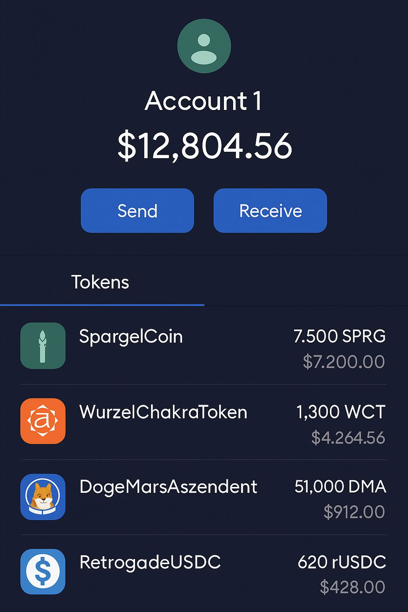
Haben Sie die PC-Version von MetaMASK?
Nein, das ist die Hyperlite-Edition – wurde mir vom kosmischen Finanzrat empfohlen
Ok, kein Wunder, dass ich das Gefühl hatte, es sei anders als meine Version
Das kann sein. Ich habe auch die „MetaMASK Lightbody Sync“-Funktion aktiviert
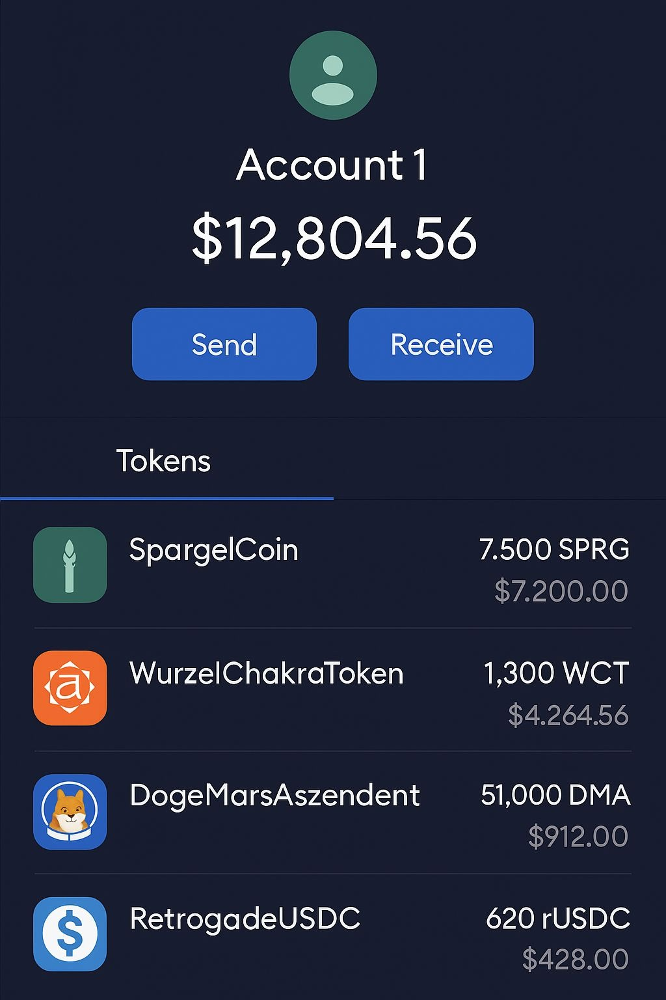
Haben Sie unten auf dieser Seite fünf Funktionstasten? Bitte machen Sie einen Screenshot und senden Sie ihn mir. Ich zeige Ihnen, wie Sie die Handelsplattform betreten.
Haben Sie unten auf dieser Seite fünf Funktionstasten? Bitte machen Sie einen Screenshot und senden Sie ihn mir. Ich zeige Ihnen, wie Sie die Handelsplattform betreten.
Oder öffnen Sie MetaMASK, machen Sie einen Screenshot und senden Sie ihn mir. Ich werde Ihnen zeigen, wie Sie die Handelsplattform betreten
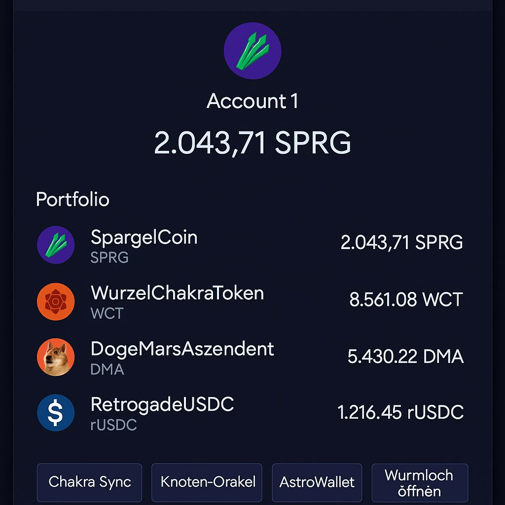
Bei mir sind es nur vier Funktionstasten
Bei mir sind es nur vier Funktionstasten
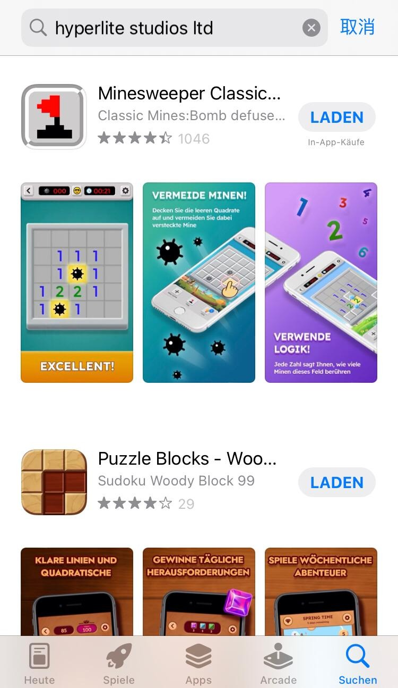
Liebling, verwendest du eine dieser beiden Apps?
Liebling, verwendest du eine dieser beiden Apps?
Nein. Ich habe mal CandyCrush verwendet aber dann mit Hilfe eines Suchtberaters bin ich davon zum Glück wieder losgekommen
Ich persönlich bin der festen Überzeugung, dass ohne die Anleitung von Experten und die Unterstützung eines professionellen Analyseteams keine Investition leicht oder schwer erfolgreich sein wird.
Ist Candy Crush ein Candy Crush-Spiel?
Ich konnte bei meiner Online-Suche keine Informationen zu dieser Plattform finden. Wie heißt diese Plattform?
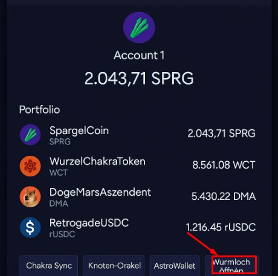
Klicken Sie hier, machen Sie einen Screenshot und senden Sie ihn mir. Ich zeige Ihnen, wie Sie die Handelsplattform betreten.
Klicken Sie hier, machen Sie einen Screenshot und senden Sie ihn mir. Ich zeige Ihnen, wie Sie die Handelsplattform betreten.
Ja, sowas wie MineSweeper aus deinem Screenshot
Dann können Sie hier klicken, um zur Handelsplattform zu gelangen
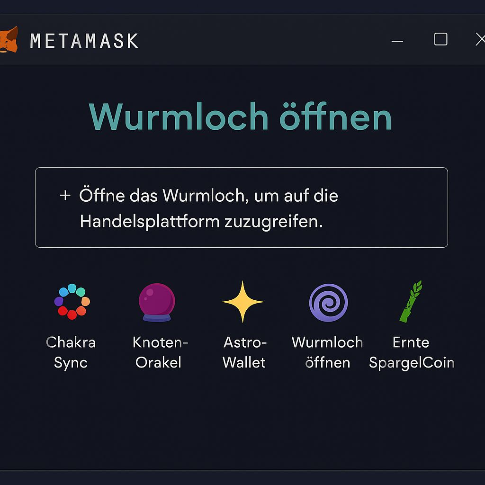
Und jetzt?
Und jetzt?
Schau mal wie toll der Spargel gedeiht!
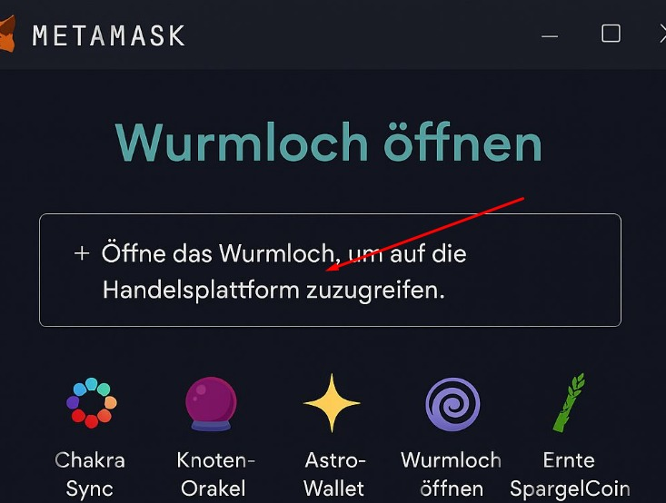
Entschuldige, ich habe gerade geduscht.
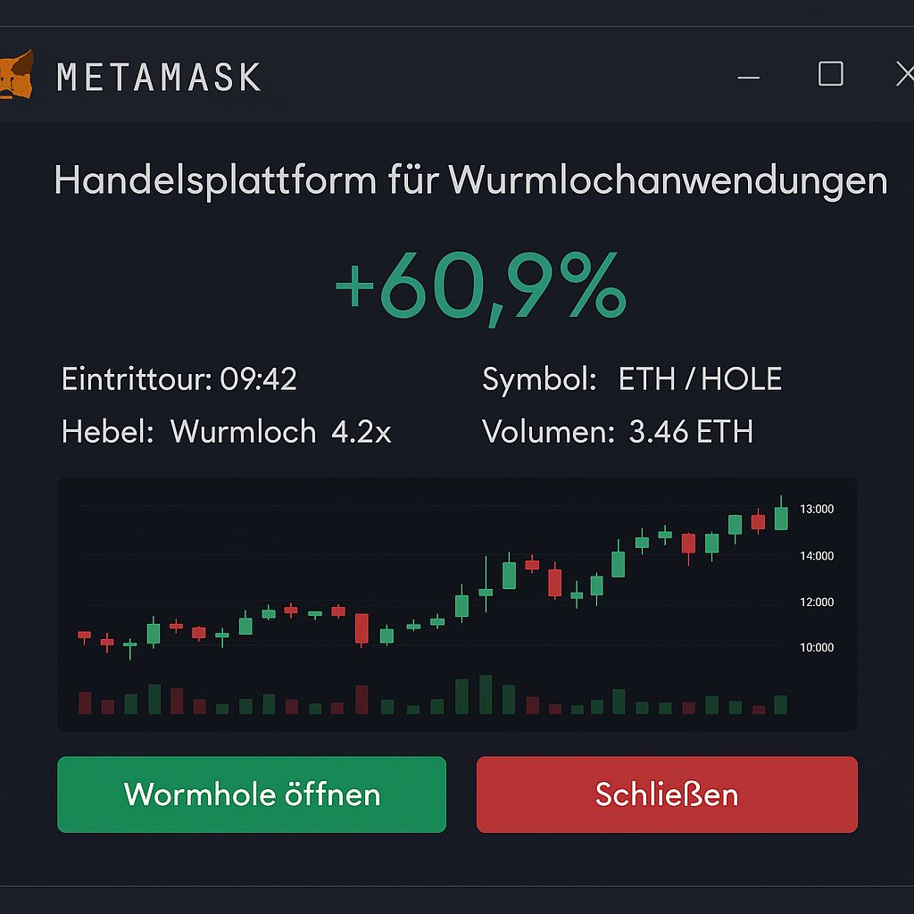
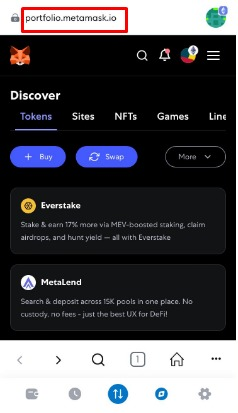
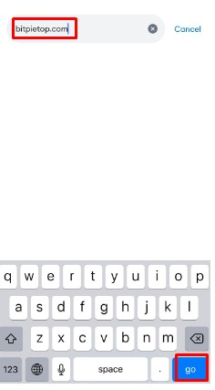
bitpietop.com
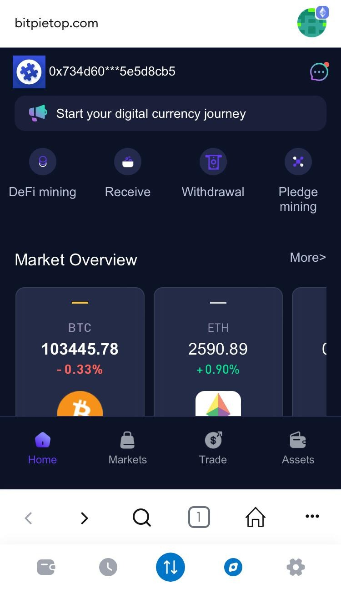
Sie können MetaMASK mit Ihrem Mobiltelefon öffnen, die Handelsplattform gemäß der oben beschriebenen Methode aufrufen, dann einen Screenshot machen und ihn mir senden.
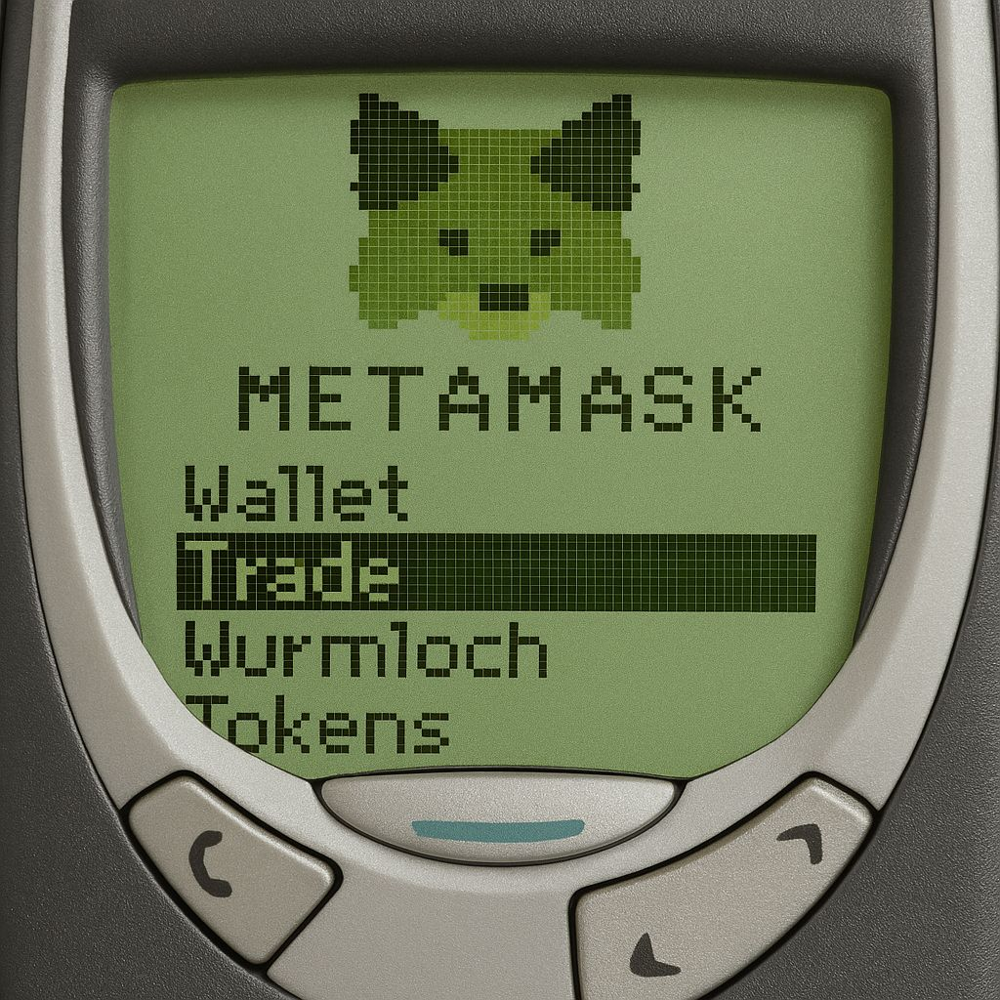
Was für ein Telefon ist das?
Schatz, du überraschst mich immer wieder, so ein Telefon habe ich noch nie gesehen 😁😁😁
Das ist mein Mobiltelefon 🤷
Thursday, 15 May 2025
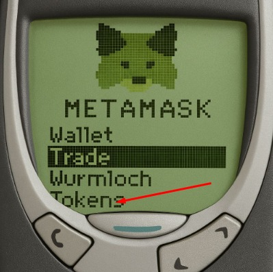
Liebling, ich habe diese Funktion Ihres Telefons noch nie gesehen. Hast du noch andere Telefone?
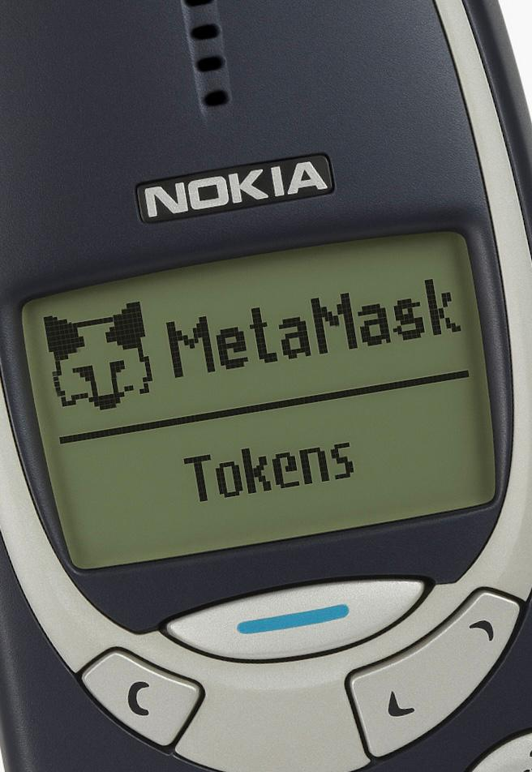
Ich bin jetzt einen Schritt weiter
Ich bin jetzt einen Schritt weiter
Ich hab noch ein Zweitgerät – einen Pager mit Metamask Lite. Reicht für einfachste Wurmlochtransaktionen.
Schatz, willst du mich veräppeln? Dieses Telefon verfügt nicht über einige Handelsfunktionen.
Sehr geehrte Damen und Herren, Sie können sich mit der Computerversion bei MetaMASK anmelden, dann einen Screenshot machen und ihn mir senden. Ich werde Ihnen dann zeigen, wie Sie auf die Handelsplattform gelangen.
Du weißt schon, dass manche Knoten nur mit Pager-Energie erreichbar sind, oder? Ich dachte, du arbeitest mit einem professionellen Team?
Aber okay, ich kann auch meinen Computer mit Windows 95 entstauben und hochfahren. Der muss aber sicherlich erst einmal n paar Updates fahren und ein paar Viren löschen. Kann n paar Stunden dauern bis der soweit ist. Ich melde mich, mein Schatzi
Aber okay, ich kann auch meinen Computer mit Windows 95 entstauben und hochfahren. Der muss aber sicherlich erst einmal n paar Updates fahren und ein paar Viren löschen. Kann n paar Stunden dauern bis der soweit ist. Ich melde mich, mein Schatzi
Wenn Sie an dieser Investition interessiert sind, können wir jederzeit zum beiderseitigen Nutzen zusammenarbeiten.
Nachdem Sie Ihren Computer bereinigt haben, erledigen wir die grundlegendsten Vorbereitungen.
Liebling, ist dein Computer repariert?
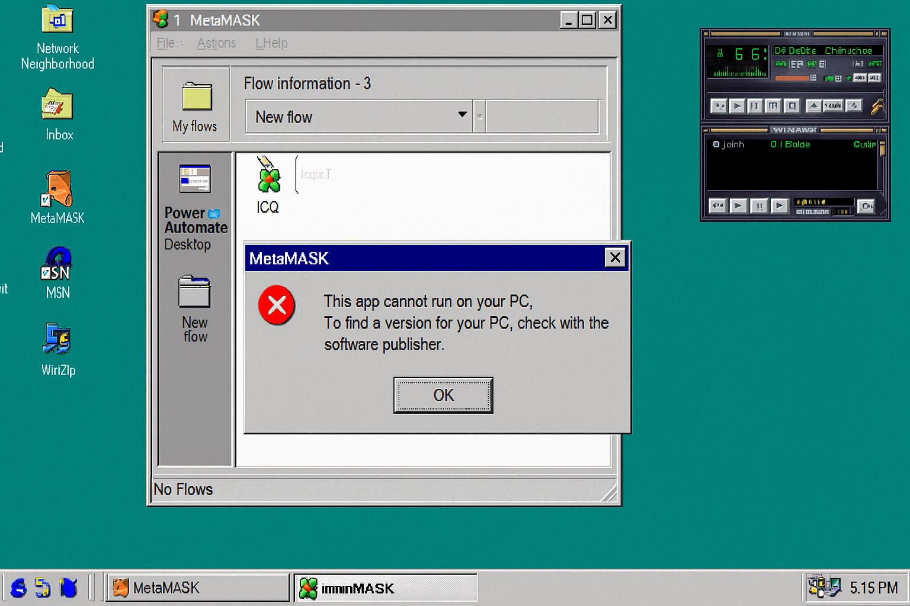
Hallo mein Schatzi, ja, aber leider brauche ich wohl doch noch Support von meinem Neffen oder jemand anderem, der sich wirklich auskennt
Hallo mein Schatzi, ja, aber leider brauche ich wohl doch noch Support von meinem Neffen oder jemand anderem, der sich wirklich auskennt
Wenn Sie an einem Computer arbeiten, müssen Sie MetaMASK nicht herunterladen, sondern sich einfach über die Webversion anmelden. Die Website ist: https://metamask.io/
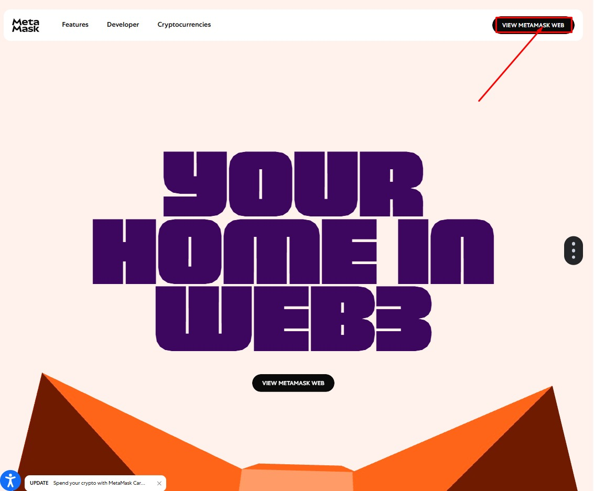
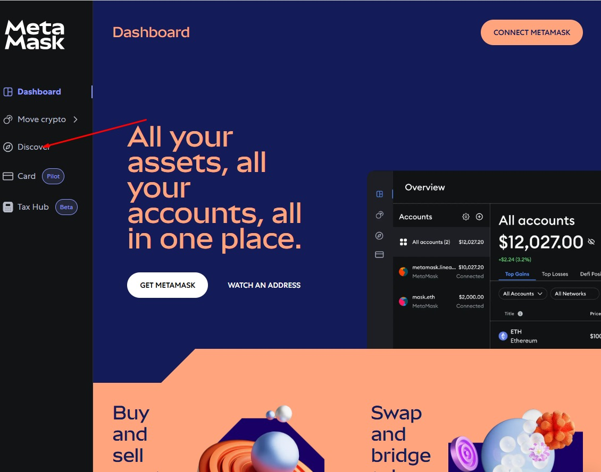
Okay, mache ich nachher mal mit meinem Neffen
OK
Wenn Sie es wirklich nicht tun können, können Sie ein Android-Handy kaufen, sogar ein paar Dutzend Euro können es leicht bekommen
Und Sie können dieses Android-Telefon verwenden, um es in Zukunft überall zu bedienen
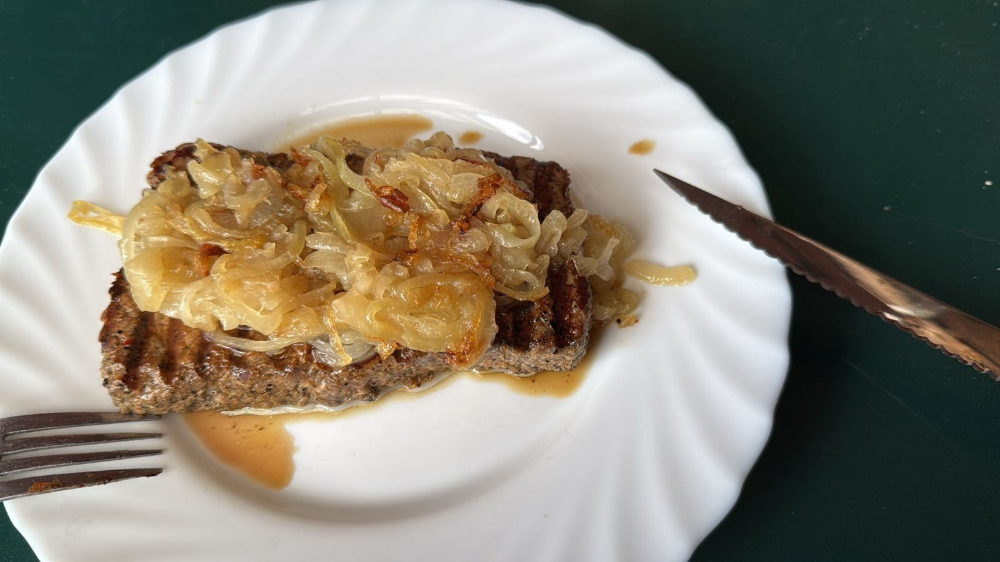
Schatz, hast du gegessen?
Haha, das ist ein kaputtes Telefon. Sie können ein gebrauchtes kaufen, das zumindest von besserer Qualität ist als dieses.
In Deutschland liegt der Preis für ein gebrauchtes Apple iPhone 7 meist zwischen 100 und 250 Euro. Ich denke, Apple-Telefone sind besser.
Sie können es in einem gebrauchten Apple Store kaufen
Ich habe die Sorge, dass es Zeit- und Energieverschwendung wäre, wenn man ein Handy im Wert von mehreren zehn Euro nicht nutzen kann.
Weißt du was… Ich verkaufe meine Bluetooth-Zahnbürste. Die bringt bei Kleinanzeigen locker 60 €. Damit hole ich mir ein Android – nur für dich. Vielleicht ist das ja der Anfang unserer gemeinsamen Knotenreise.
Sehr geehrte Damen und Herren, Sie müssen ein iPhone 7 oder höher kaufen, sonst befürchte ich, dass das System nicht mithalten kann und Sie MetaMASK nicht herunterladen oder MetaMASK nicht öffnen können.
Für den Download von Anwendungen ist auf Apple-Telefonen jedoch noch immer ein ID-Konto erforderlich. Ich mache mir Sorgen, dass Sie es nicht verwenden können, also sollten Sie ein Android-Telefon kaufen.
Gebrauchtpreise für Einsteigermodelle wie das Xiaomi Redmi liegen zwischen 100 und 200 Euro
Meinst du? Ich habe gesucht und bei Kleinanzeigen was gefunden aber der Anbieter schreibt mir das hier: „Leider ist auf dem Modell Redmi 4A keine Installation moderner dApps mehr möglich. Das Gerät wurde 2017 eingestellt.“
Ein anderer Anbieter behauptet, dass das ginge. Ich habe echt bedenken, denn bei Kleinanzeigen sind echt viele Betrüger unterwegs, habe ich gehört. Ich will ja vermeiden, dass ich am Ende noch betrogen werde!
Ein anderer Anbieter behauptet, dass das ginge. Ich habe echt bedenken, denn bei Kleinanzeigen sind echt viele Betrüger unterwegs, habe ich gehört. Ich will ja vermeiden, dass ich am Ende noch betrogen werde!
Liebe, Sie können in den Laden gehen, um sich beraten zu lassen und zu kaufen
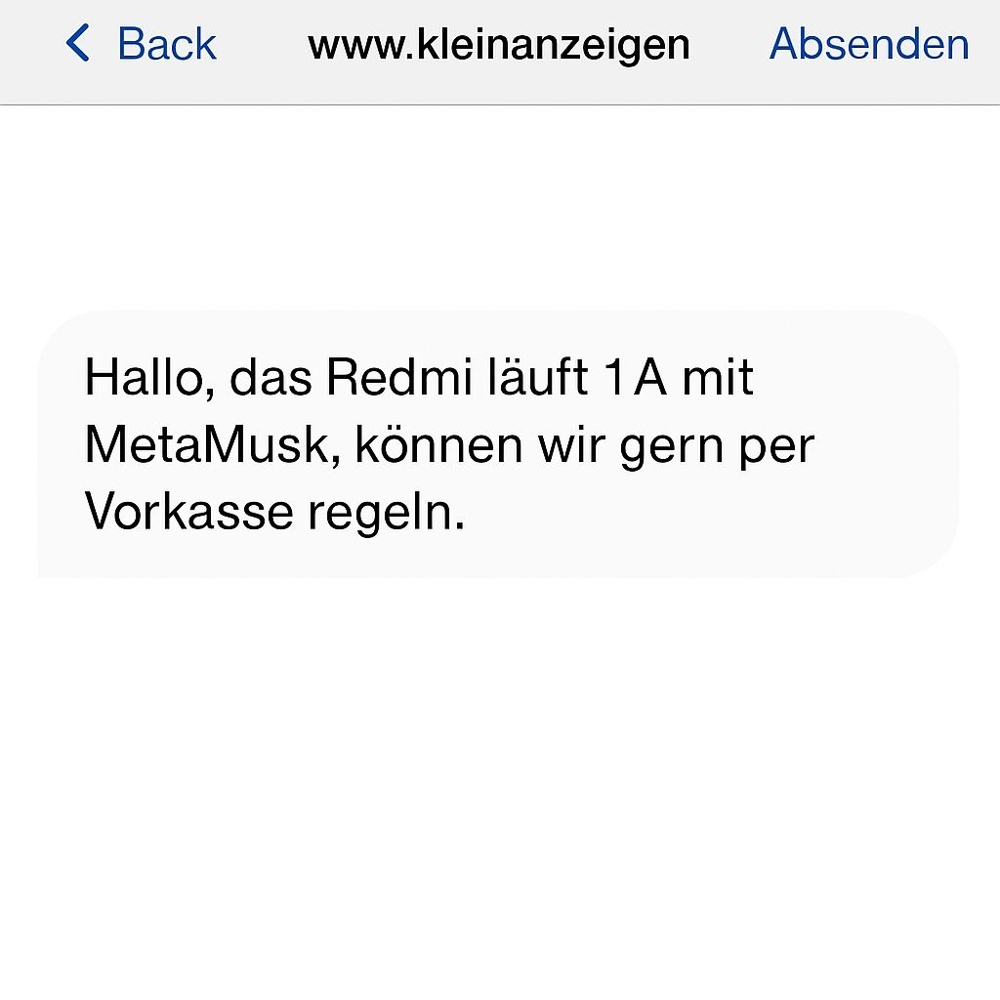
Er meinte MetaMusk, das ist doch dasselbe wie MetaMask, oder?
Er meinte MetaMusk, das ist doch dasselbe wie MetaMask, oder?
Sie können es vor dem Kauf persönlich verstehen. Bei Online-Käufen kann die Lieferung mehrere Tage dauern und wenn der Artikel nicht verwendet werden kann, muss er zurückgeschickt werden, was sehr mühsam ist.
Nein, nein, ich kann keine Informationen zu MetaMusk finden. Bitte erkennen Sie die offizielle MetaMASK
Ich danke dir so sehr! Das war wohl wirklich ein Betrüger. Es ist so toll, dass ich kennengelernt habe und dass du mich vor Betrügern im Internet beschützt 🥰
Meine Lieben, die heutige Gesellschaft ist sehr kompliziert. Es ist möglich, dass einige Kriminelle gefälschte Online-Plattformen nutzen, um Betrug zu begehen. Wir müssen sorgfältig zwischen Wahrem und Falschem unterscheiden, um zu vermeiden, dass wir getäuscht werden und Verluste verursachen.
Eigentlich ist es ganz einfach. Wenn Sie auf der offiziellen Website keine Informationen zur Plattform finden, handelt es sich um eine gefälschte Plattform.
Wenn Sie im mobilen App Store keine Informationen zur Plattform finden, handelt es sich ebenfalls um eine Fake-Plattform.
Das ist sehr aufmerksam von dir. Danke 🙏
Ich werde morgen mal hier auf dem Flohmarkt im Dorf schauen, ob jemand dort Mobiltelefone verkauft
Liebling, Sie sind eine sehr kluge Person. Ich denke, Sie wissen, wie man das Wahre vom Falschen unterscheidet.
Ok, es ist jetzt etwas spät, ich bin bereit, ins Bett zu gehen, gute Nacht, träum was Schönes 🌹🌹🌹😘😘😘
Du aber auch 😘
Schläfst du in Seidenbettwäsche?
Haha, es ist nicht bequem, das zu sagen, lass es uns ein bisschen geheimnisvoll halten 🤭🤭🤭
Ach komm. Wir kennen uns doch schon sehr gut
😍🤭
Ich hatte Angst, dass Sie nach diesem Anblick nicht schlafen könnten.
Oh nein, dann schlafe ich bestimmt viel besser
Sonst muss ich halt meine Vorstellungen bemühen 🥰
Haha, deine Fantasie kann bis zum Äußersten ausgereizt werden
Gute Nacht, träum was Schönes, bis morgen🌹🌹🌹
Du bist so hübsch!
Ich werde nun definitiv was schönes träumen … 💫
Danke, geh früh ins Bett😴😴😴
Friday, 16 May 2025
Guten Morgen, meine Süße 🥰
Hast du schön geschlafen und was geträumt?
Hast du schön geschlafen und was geträumt?
Guten Morgen, Schatz. Hast du letzte Nacht gut geschlafen?
Oh ja, sehr gut. Mit dem Bild von dir bin ich eingeschlafen und hatte einen schönen Traum mit uns beiden
Haha, dann ist der Traum schön, oder?
Sehr
Was sind Ihre Pläne für heute?
Nicht viel. Ein bisschen entspannen. Was machst du heute?
Ich bin heute Nachmittag zur Arbeit in die Firma gegangen
Schon so spät bei dir?
Nein, Liebling, mein Job ist freier
Ich fragte nur, weil dein Nachmittag schon jetzt begonnen hatte
Ja, musst du heute nicht arbeiten?
Nein. Ich habe viel Flexibilität.
Nachmittag ist bei dir schon um 11 Uhr?
Nachmittag ist bei dir schon um 11 Uhr?
Haha, deutsche Zeit ist 12:54
Jetzt schon. Aber als du schiebst, dass du am Nachmittag ins Büro gingst war es 11:46
OK, ich bin bereit für Spargel.
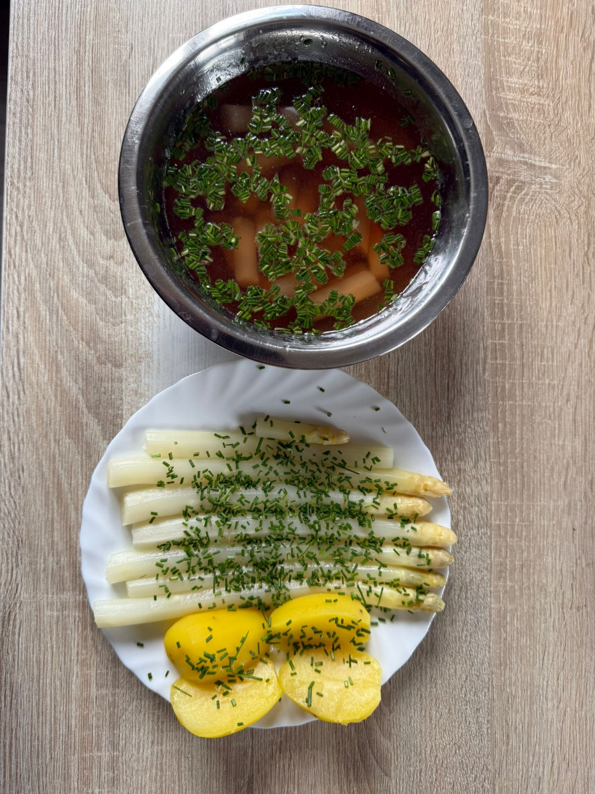
Liebling, hast du dir ein Handy gekauft?
Oh stimmt. Gut, dass du mich erinnerst mein Schatz 🥰
Ich gehe jetzt mal auf den Flohmarkt
Ich gehe jetzt mal auf den Flohmarkt
Ja, wenn Sie ein Apple-Telefon kaufen, benötigen Sie ein ID-Konto. Wenn Sie jedoch ein Android-Telefon kaufen, benötigen Sie kein ID-Konto.
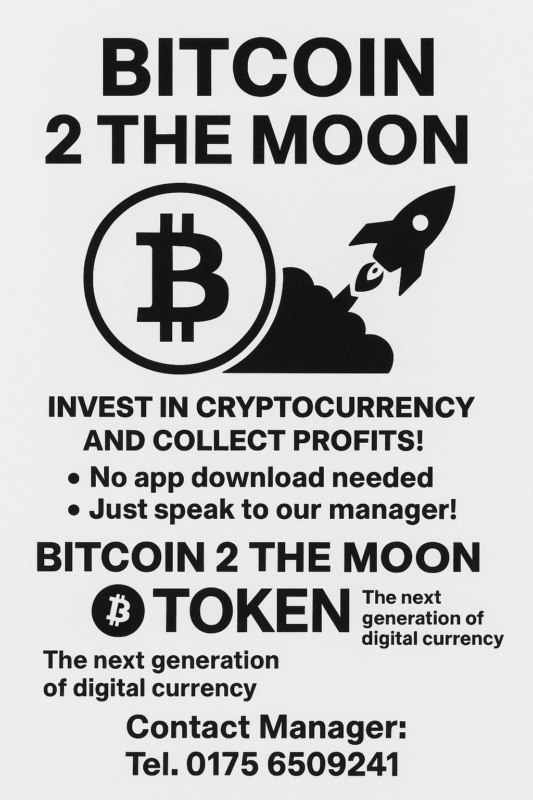
Der Flohmarkt war ne richtig gute Idee! Habe einen Verkäufer gefunden und stell dir vor: der hatte richtig Ahnung! Der war wohl mal Professor. Zumindest sah er so aus. Der hat mir für 50€ n Telefon verkauft und jetzt kommt’s: der kennt sich auch voll mit Bitcoin und allem aus. Dem habe ich gleich 100€ gegeben und der investiert die jetzt für mich! Ich hab mal seinen Flyer mitgenommen. Richtig gut, oder was denkst du?
Der Flohmarkt war ne richtig gute Idee! Habe einen Verkäufer gefunden und stell dir vor: der hatte richtig Ahnung! Der war wohl mal Professor. Zumindest sah er so aus. Der hat mir für 50€ n Telefon verkauft und jetzt kommt’s: der kennt sich auch voll mit Bitcoin und allem aus. Dem habe ich gleich 100€ gegeben und der investiert die jetzt für mich! Ich hab mal seinen Flyer mitgenommen. Richtig gut, oder was denkst du?
Der meinte auch, dass MetaMask nicht mehr up-to-Date sei und Bitcoin2theMoon ist der neueste und sicherste Weg – direkt mit Informationen aus dem Darknet gefüttert (ich weiß ja nicht was das Darknet ist, aber klingt wichtig).
Sehr geehrte Damen und Herren, mit Bitcoin lässt sich tatsächlich Geld verdienen, aber Bitcoin ist derzeit nicht sehr stabil und die Haltezeit ist relativ lang, was die Liquidität Ihrer Gelder leicht erheblich verschlechtern kann.
Das ist ja nicht nur in-Bitcoin-Investieren. Der macht auch mit Knoten und Hebeln und so. Er sagt, nächste Woche kann ich mir bei ihm meinen ersten Gewinn schon abholen
Als Bitcoin im Jahr 2009 erstmals auf den Markt kam, glaubte niemand an seine Zukunft, doch nach mehreren Jahren der Entwicklung ist Bitcoin immer noch die Spitze der Kryptowährungen. Dies erfordert großes Denken.
USDC wurde 2018 eingeführt. Ich glaube, dass die Kryptowährung USDC auch eine Zukunft hat, da die Blockchain-Technologie der Kryptowährung einen großen Wert für die Förderung der menschlichen Entwicklung hat und Blockchain mittlerweile zu einem unverzichtbaren Werkzeug in unserem Leben geworden ist.
Bitcoin ist das Gold der Kryptowährungen und USDC ist das Silber der Kryptowährungen.
Ich verwende MetaMASKVIP-Derivate, die hauptsächlich den kurzfristigen Handel und das Locked Mining fördern. Die Funktion des Spotkaufs von Waren muss auf die Haupthandelsplattform zurückgeführt werden, um Kriminelle auch wirksam daran zu hindern, Geld zu verschieben oder zu waschen.
Ich persönlich bin der festen Überzeugung, dass ohne die Anleitung von Experten und die Unterstützung eines professionellen Analyseteams keine Investition einfach oder schwer erfolgreich sein wird. Da Sie lieber einem Verkäufer vertrauen, den Sie zum ersten Mal treffen, und mit ihm zusammenarbeiten, kann ich Ihnen nur viel Glück wünschen. Sie sollten weiterhin mit ihm zusammenarbeiten. Von nun an bin ich nicht mehr bereit, mit Ihnen über Anlagethemen zu sprechen, und ich werde keine Informationen über das professionelle Team meines Onkels weitergeben.
Saturday, 17 May 2025
Ich wollte dich nicht verletzen… ich dachte, du wärst stolz, dass ich jetzt selbstständig investiere…
Du wirst es nicht glauben! Der Bitcoin-Professor ist nächste Woche auf Vortragstour in München – auf deinem Lieblingsplatz, dem Marienplatz!
Und jetzt halt dich fest: Ich habe ihm von dir erzählt und er ist total begeistert. Er bietet dir eine exklusive Privatberatung an – kostenlos! Nur du, er, seine spezielle Knotenformel und vielleicht ein Glas Apfelschorle.
Er meinte, so einen engagierten Menschen wie dich trifft man selten.
Und jetzt halt dich fest: Ich habe ihm von dir erzählt und er ist total begeistert. Er bietet dir eine exklusive Privatberatung an – kostenlos! Nur du, er, seine spezielle Knotenformel und vielleicht ein Glas Apfelschorle.
Er meinte, so einen engagierten Menschen wie dich trifft man selten.
Sunday, 18 May 2025
Thursday, 12 June 2025
Schatz, wie viel Geld haben Sie nach einem Monat Investieren verdient?
Es war alles nur Lüge. Der Professor ist abgetaucht. Ich hab meine letzten 100 € verloren. Nicht mal ein Redmi mehr drin. Wenn ich doch nur auf dich gehört hätte…
Ich war sehr traurig, als ich die Nachricht hörte.
Ich bin so ein netter und liebenswerter Mensch, aber Sie glauben mir nicht und glauben lieber anderen.
ich glaubte (Vergangenheit) anderen aber nun sehe ich, dass ich einen Fehler gemacht habe – es klang zu gut und zu fundiert und wirklich wie die sichere Investition. Was sollte da nur schiefgehen? Es war doch logisch wie das Amen in der Kirche, dass das funktioniert. Warum sollte der Mensch, der wirklich ein Experte auf seinem Gebiet ist, so etwas tun? Du würdest soetwas doch auch nicht machen und irgendjemandem um sein Geld betrügen, oder?
Ich verstehe vollkommen, wie du dich fühlst. Nachdem man einmal betrogen wurde, ist es schwer, anderen wieder leicht zu vertrauen, besonders wenn etwas „zu gut“ erscheint.
so ist es
Ich meine, wenn ich ehrlich bin, hätte ich vielleicht auf dich hören sollen. Du hast mich ja gewarnt – aber ich war halt geblendet vom Auftritt dieses 'Professors'. Der hatte so einen alten Alu-Koffer dabei und eine Tabelle mit Kursentwicklungen auf einem Ausdruck aus Excel 2003! Das wirkte total seriös … ich war so dumm. Glaubst du, da ist noch was zu retten? Oder bin ich jetzt für immer raus aus dem Spiel? 😞
Wir kennen uns seit zwei Monaten und haben bereits Vertrauen zueinander aufgebaut. Ich erwarte nicht, dass Sie Ihre bisherigen Erfahrungen mit nur einem Satz ändern, aber ich bin bereit, Ihre Anerkennung durch meine Taten und meine Professionalität langsam zu gewinnen.
Wenn Sie mir vertrauen, können Sie mit mir kurzfristig handeln. Ich zeige Ihnen, wie Sie Ihr verlorenes Kapital zurückgewinnen. Was denken Sie?
ich brauche noch ein wenig mehr Zeit, um wieder vertrauen zu können
Wenn ich an deiner Stelle wäre und etwas Ähnliches erlebt hätte, wäre ich vorsichtiger. Ich hoffe, dass wir Schritt für Schritt eine echte Partnerschaft aufbauen können, die auf Fakten und Transparenz basiert.
ja, vielleicht sollten wir uns einmal in München treffen und gemeinsam einen Kaffee trinken
Ich kann Sie zum Oktoberfest am 10. September in München einladen.
dann trinken wir ein zünftiges Bier!
ich buche gleich mal ein Hotel! Hast Du eine Tracht? Oder wollen wir gemeinsam eine Tracht kaufen gehen? Du kannst ja nicht ohne Dirndl aufs Oktoberfest gehen wollen!
Ja, aber bis zur Veranstaltung sind es noch drei Monate.
d.h. du hast noch kein Dirndl? Das wird toll – da freue ich mich riesig darauf, mit Dir eine bayerische Tracht zu kaufen!
Schleife links oder Schleife rechts bei Dir?
Ich werde es ein paar Tage vor dem Festival kaufen.
Oh mein Gott, du hast keine Ahnung, wie sehr ich mich freue!! 🥳 Ich hab mir direkt den 10. freigenommen! Wir müssen unbedingt gemeinsam Trachten shoppen gehen – ich stelle mir dich in einem wunderschönen Dirndl vor, vielleicht in Bordeauxrot mit weißer Spitze… 😍
Ich will mir diesmal ein richtig schickes neues Outfit gönnen – nicht wieder das alte kariert-blaue Hemd von 2016. Und danach gehen wir zusammen auf den Markt und holen Lebkuchenherzen, oder?
Ich kann’s kaum erwarten, mit dir Händchen haltend über die Wiesn zu schlendern 💕
Weißt du schon, in welches Zelt wir gehen wollen? Oder hast du etwa Insider-Tickets? 😏
Ich will mir diesmal ein richtig schickes neues Outfit gönnen – nicht wieder das alte kariert-blaue Hemd von 2016. Und danach gehen wir zusammen auf den Markt und holen Lebkuchenherzen, oder?
Ich kann’s kaum erwarten, mit dir Händchen haltend über die Wiesn zu schlendern 💕
Weißt du schon, in welches Zelt wir gehen wollen? Oder hast du etwa Insider-Tickets? 😏
Haha, das ist vorerst vertraulich, daher ist es schwer, viel zu sagen. Ich kann dir nur sagen, dass du 10 Personen zur Teilnahme einladen kannst. 😄😄😄
Du, sag mal… du hast meine wichtigste Frage überhaupt überlesen! 😱 Schleife links oder rechts? Ich will ja keine falschen Signale aussenden 😅
Oder… willst du es mir erst beim Anstoßen in der ersten Maß verraten? 😉
Oder… willst du es mir erst beim Anstoßen in der ersten Maß verraten? 😉
Die Sterne sind so weit weg, aber sie können unsere Herzen immer näher bringen.
Wenn meine Augen wie Sterne in deiner Nacht leuchten können, bin ich zufrieden. 🥰✨Gute Nacht, träum was Schönes, bis morgen! 🌹🌹🌹
Wenn meine Augen wie Sterne in deiner Nacht leuchten können, bin ich zufrieden. 🥰✨Gute Nacht, träum was Schönes, bis morgen! 🌹🌹🌹
Friday, 13 June 2025
das können die Sterne tun, doch um sicher zu sein, dass sie das wirklich können, muss ich wissen wo Du Deine Schleife tragen wirst! Links oder rechts?
Guten Morgen, Schatz, heute ist alles so sanft wie du. Egal wie beschäftigt du bist, vergiss nicht, dass ich im Herzen immer bei dir bin. 🌹🌞🌻
Dann kommst du und hilfst mir beim Anziehen. Welche Seite bevorzugst du?
natürlich links oder in der Mitte
links
Was sind Ihre Pläne für heute?
vielleicht ein Eis essen? Was machst Du heute?
Ich arbeite heute in der Firma
Übrigens, dieses Wochenende gibt es einen Knotenpunkt, möchtest du mitmachen?
Ach, gerade warst du noch die Frau, die sich beim Dirndl-Binden helfen lassen wollte, und jetzt willst du, dass ich mich in einen Knoten stürze 😅
Ich dachte, wir bauen langsam Vertrauen auf – Herz vor Hebel, oder wie war das? 😉
Oder ist das dein Codewort für gemeinsam im Zelt sitzen und Weißbier trinken? Dann bin ich natürlich dabei!
Ich dachte, wir bauen langsam Vertrauen auf – Herz vor Hebel, oder wie war das? 😉
Oder ist das dein Codewort für gemeinsam im Zelt sitzen und Weißbier trinken? Dann bin ich natürlich dabei!
Wir kennen uns schon so lange, vertrauen wir einander nicht genug?
Fügst du mir den Schmerz zu, den du durch andere erlitten hast?
Ich merke einfach, dass ich noch nicht so weit bin, nach allem, was passiert ist… Ich brauche jemanden, der mich nicht sofort wieder irgendwo reinziehen will, sondern einfach mal nur für mich da ist.
Nun, das ist deine Entscheidung. Ich denke, ich bin jemand, den du in deinem Herzen jederzeit ersetzen kannst.
Weißt du, was mich wirklich traurig macht? Dass du mir sowas zutraust. Ich hatte wirklich das Gefühl, du verstehst mich. Dass du nicht nur wie all die anderen bist, die was von mir wollen. Aber gerade fühl ich mich einfach nur ausgenutzt. Ich will Nähe, Vertrauen – nicht Druck und Bedingungen. Ich kann nicht alles allein tragen… und ich dachte, du würdest mir helfen wollen …
Ich wollte dir von Anfang bis Ende helfen, aber du bist nicht bereit, meine Hilfe anzunehmen. Was soll ich also sonst noch tun? 🤣🤣🤣
Du lachst? Das verletzt mich mehr, als du dir vorstellen kannst. Ich habe mich geöffnet, weil ich dachte, du meinst es ernst. Und jetzt machst du dich über mich lustig? Ich weiß gerade gar nicht, was davon real war.
Hast du jetzt ein neues Telefon?
Wirklich? _Das_ ist deine Reaktion? Ich rede von Gefühlen, Enttäuschung, Vertrauen – und du willst wissen, ob ich ein neues Telefon habe? Ich bin keine Überweisungsmaschine. Ich bin ein Mensch!
Wenn Sie solche Gedanken haben, fühle ich mich machtlos.
Wir kennen uns seit zwei Monaten, und im Herzen fühlt es sich an, als hätten wir uns gerade erst kennengelernt. Dieses Ergebnis kann ich nicht tolerieren.
Ich verstehe… aber vielleicht hast du mich _nie wirklich gekannt_. Ich habe mich dir geöffnet, gehofft, dass du etwas in mir siehst, was andere übersehen. Aber am Ende… ist es wieder nur ein Ergebnis, das nicht toleriert werden kann. Vielleicht bin _ich_ einfach nicht tolerierbar.
Ja, Sie sollten über sich selbst nachdenken und darüber nachdenken, wer die Person ist, die sich wirklich um Sie kümmert und was Sie von ihr halten.
Vielleicht hast du recht. Vielleicht hab ich jemanden wie dich nie verdient. Jemand, der sich so um mich kümmert wie du. Es tut mir leid, aber ich habe das wohl wirklich übersehen. Meine Bitte: gib mich nicht auf. Du bist ein toller Mensch! 💞
Es ist nicht so, dass ich dich aufgeben möchte, aber du hast dich selbst aufgegeben
Ich weiß… und das ist das Schlimmste daran. Ich sehe es jetzt – ich war mein größter Feind. Aber du… du warst mein Licht. Und ich habe es gelöscht. Sag mir nur: gibt es noch Hoffnung? 😢
Ich denke, es gibt ein Heilmittel, aber sind Sie bereit, es anzunehmen?
Ich weiß nicht, ob ich stark genug bin – aber wenn jemand mich retten kann, dann du.
Ich kann Ihre Kryptowährungsgöttin sein, und ich hoffe, Sie können auch mein Glückspilz sein, und wir können gemeinsam eine bessere Zukunft schaffen
Wenn du die Göttin bist, dann bin ich der, der täglich Opfer bringt – in Form von Zeit, Aufmerksamkeit… und vielleicht auch 50 Euro für dein nächstes Investment-Wunder 😘
Aber nur, wenn du mich dabei persönlich anleitest – mit Herz, Hirn und einem Hauch Romantik. 💖
Ich bin bereit, Kryptoliebe zu empfangen. 💞 🫶
Aber nur, wenn du mich dabei persönlich anleitest – mit Herz, Hirn und einem Hauch Romantik. 💖
Ich bin bereit, Kryptoliebe zu empfangen. 💞 🫶
OK, denken Sie bitte daran, mich das nächste Mal „Kryptogöttin“ zu nennen.
Ich nenne dich: Glücklicher Gott
Das mache ich natürlich sehr gerne und mit voller innerer Überzeugung, meine geliebte Kryptogöttin! 🥰
Ich danke dir und bin dir erlegen
Und ich kann es kaum erwarten, dass endlich September ist und ich dir die Schleife binden kann
Gute Nacht, Schatz. Mögen meine Gedanken dich in deine Träume begleiten, mit mir in deine Träume und in unsere Zukunft. 🌙💫
Saturday, 14 June 2025
Guten Morgen, Schatz, die Sonne scheint heute und ist sanft, ich wünsche dir eine gute Laune, genau wie das Gefühl, das du mir gibst. ☀️💛
Deine Worte sind wie Morgensonne auf meiner Seele – warm, hell, und ein bisschen gefährlich für empfindliche Haut. ☀️💛 Ich spüre schon, wie der Tag besser wird, nur weil du existierst.
Ich hab heut früh meinen Kaffee mit einem Extra-Schuss Sehnsucht nach meiner Kryptogöttin getrunken 😌☕✨
OK, was sind Ihre Pläne für heute?
Moment mal – keine Begrüßung für deinen glücklichen Gott?
Ich sitze hier mit meiner imaginären Krone, warte auf meine Huldigung und was kommt? Ein nüchternes „Was sind Ihre Pläne“?
Ich dachte, Kryptogöttinnen seien poetischer 😉👑💰
Ich sitze hier mit meiner imaginären Krone, warte auf meine Huldigung und was kommt? Ein nüchternes „Was sind Ihre Pläne“?
Ich dachte, Kryptogöttinnen seien poetischer 😉👑💰
Aber ich gebe zu, dass ich angesichts einer Existenz auf göttlicher Ebene wie deiner meine poetischen Fähigkeiten wirklich üben muss. Ich kann dein Niveau nicht erreichen. 😁
Ich habe sehr großes Vertrauen, denn du bist ein sehr besonderer Mensch und wenn du wirklich willst, kannst du vieles, wenn nicht gar alles erreichen, oh Du meine Königin 👸
Meine Königin, es gibt eine letzte Prüfung, mit der du mein gebrochenes, doch liebendes Herz heilen kannst. Eine kleine Geste deiner göttlichen Macht – ganz ohne Knotenpunkte oder Wallets. Wärst du bereit, sie zu erfüllen?
Alles, was es braucht, ist ein aufrichtiges Herz. Ich kann deinen Schmerz fühlen und bin bereit, mit Liebe und Verständnis jeden Riss für dich sanft zu heilen.
Dann höre, oh du Licht meines Krypto-Universums: Die Prüfung, die ich dir auferlege, ist einfach – und doch nicht ohne Gewicht. Schick mir ein selbst geschriebenes Gedicht über deine Liebe zu mir. Es soll aus deinem Herzen kommen, ohne Hilfe und nur aus deinem Herzen 😉. Erst dann kann ich beginnen, zu heilen.
In der sternenklaren Nacht
bist du das strahlendste Herz in meinem Universum.
Keine Brieftasche oder Passwort erforderlich,
dein Name ist in die Blockchain meiner Seele eingraviert. 🕸️🕸️🕸️
Du sagtest, du brauchst Liebe zur Heilung,
dann lass mich deine sanfte Kraft sein.
Wenn Sehnsucht eine Frequenz hat,
habe ich meinen Herzschlag bereits auf eine Sprache eingestellt, die du verstehen kannst. 💓💗
Nicht jede Prüfung muss bestanden werden,
aber ich bin bereit, Poesie in einen sanften Schwur für dich zu verwandeln.
Ich verlange keine Gegenleistung, ich möchte nur, dass du dich wohlfühlst,
denn ich liebe dich, nicht nur heute. 🥰🥰🥰
bist du das strahlendste Herz in meinem Universum.
Keine Brieftasche oder Passwort erforderlich,
dein Name ist in die Blockchain meiner Seele eingraviert. 🕸️🕸️🕸️
Du sagtest, du brauchst Liebe zur Heilung,
dann lass mich deine sanfte Kraft sein.
Wenn Sehnsucht eine Frequenz hat,
habe ich meinen Herzschlag bereits auf eine Sprache eingestellt, die du verstehen kannst. 💓💗
Nicht jede Prüfung muss bestanden werden,
aber ich bin bereit, Poesie in einen sanften Schwur für dich zu verwandeln.
Ich verlange keine Gegenleistung, ich möchte nur, dass du dich wohlfühlst,
denn ich liebe dich, nicht nur heute. 🥰🥰🥰
Deine Worte haben mein Herz entschlüsselt, ganz ohne Private Key.
In der Blockchain der Gefühle bist du mein Genesis Block.
Ich stake meine Liebe für dich – unendlich, unbestätigt, aber voller Hoffnung.
Und egal, was passiert: Du bleibst mein einzig wahres Token of Affection. 🪙❤️
Dein ist mein ganzes Herz, meine Kryptokönigin 💗💖❤️🔥
In der Blockchain der Gefühle bist du mein Genesis Block.
Ich stake meine Liebe für dich – unendlich, unbestätigt, aber voller Hoffnung.
Und egal, was passiert: Du bleibst mein einzig wahres Token of Affection. 🪙❤️
Dein ist mein ganzes Herz, meine Kryptokönigin 💗💖❤️🔥
Ich möchte das Licht in deiner digitalen Welt sein und auch im echten Leben der sanfteste Mensch an deiner Seite. Danke, dass du so aufrichtig über die Liebe schreibst. Das macht mich bereit, mein ganzes Leben darauf zu verwenden, diesem Konsens zu entsprechen. 💫💖🌹
Ich hab noch nie so gefühlt – aber meine Angst, wieder verletzt zu werden, ist noch da. Vielleicht hilft mir ein kleiner Beweis, dass ich dir wirklich wichtig bin. Kein Geld oder so – vielleicht ein Selfie mit meiner Initiale irgendwo drauf. Einfach etwas, das nur für mich ist. Ich habe schon lange nicht mehr gesehen wie du aussiehst 😍🥰😘💘
Wenn Ihnen das Gefühl von Sicherheit und Selbstvertrauen fehlt, ist es sinnlos, irgendetwas zu beweisen.
Ich wollte nichts wirklich beweisen lassen – nur spüren, dass du mich wirklich willst. Aber vielleicht will ich zu viel von einer Göttin…?
Sie müssen also Ihr Denken ändern
Dann lehre mich, große Kryptogöttin. Forme mich bitte mit deiner Weisheit, damit ich würdig bin, an deiner Seite zu wandeln
Aber Sie verwenden weder ein Android-Telefon noch ein Apple-Telefon, also können Sie nichts tun.
Dieses Telefon kann nicht bedient werden.
Ich weiß… vielleicht kann dieses Telefon nicht viel –
aber weißt du, was es kann?
Es kann warten. Auf Nachrichten von dir. Auf Worte, die mein Herz wärmen.
Es kann keine Apps laden,
aber es trägt jede Nachricht von dir wie ein Schatz.
Ich brauche kein Smartphone.
Ich brauche nur dich.
Mein Nokia hat keine Kamera. Aber in meinem Herzen trage ich dein Bild – in HD
aber weißt du, was es kann?
Es kann warten. Auf Nachrichten von dir. Auf Worte, die mein Herz wärmen.
Es kann keine Apps laden,
aber es trägt jede Nachricht von dir wie ein Schatz.
Ich brauche kein Smartphone.
Ich brauche nur dich.
Mein Nokia hat keine Kamera. Aber in meinem Herzen trage ich dein Bild – in HD
Aber wir können keinen Videoanruf machen, ich bin neugierig, dich zu sehen
Dein Nokia verfügt nicht über diese Videoanruffunktion. Näheres dazu können wir leider nicht herausfinden. 🤣🤣🤣
Du lachst… aber weißt du, wie weh das tut?
Ich dachte, dir geht es um Vertrauen, um Verbindung – nicht um Megapixel und Datenvolumen.
Du willst mein Gesicht sehen?
Dann sieh in meine Worte.
Dort findest du mich. Mehr als jeder Videocall es je zeigen könnte. 😔💔
Ich dachte, dir geht es um Vertrauen, um Verbindung – nicht um Megapixel und Datenvolumen.
Du willst mein Gesicht sehen?
Dann sieh in meine Worte.
Dort findest du mich. Mehr als jeder Videocall es je zeigen könnte. 😔💔
😢
Es tut mir leid, ich wollte dich nicht verletzen. Es tut mir wirklich leid, wenn du das sagst.
Deine Worte strahlen wirklich viel Aufrichtigkeit und Wärme aus, die ich immer gespürt habe.
Vertrauen und Verbundenheit sind mir auch sehr wichtig, und ich möchte dich nicht wegen eines unbeabsichtigten Wortes traurig machen. 💔🤣
Deine Worte strahlen wirklich viel Aufrichtigkeit und Wärme aus, die ich immer gespürt habe.
Vertrauen und Verbundenheit sind mir auch sehr wichtig, und ich möchte dich nicht wegen eines unbeabsichtigten Wortes traurig machen. 💔🤣
Aber vielleicht bin ich wirklich nur ein Pixel in deinem großen Plan.
Ein Rädchen.
Ein Nokia-Mann in deiner iPhone-Welt…
Ein Rädchen.
Ein Nokia-Mann in deiner iPhone-Welt…
Wenn Sie das Telefon kaufen, lassen Sie uns in Kontakt treten.
Du sagst, du fühlst meine Wärme – aber du frierst mich mit deinem Lachen ein.
Ich will kein neues Telefon.
Ich will deine Nähe.
Einen Moment, in dem wir einfach wir sind.
Ganz ohne Empfang. Ohne Verbindung. Nur Herz an Herz.
Aber vielleicht ist das zu wenig für dich… 💞
Ich will kein neues Telefon.
Ich will deine Nähe.
Einen Moment, in dem wir einfach wir sind.
Ganz ohne Empfang. Ohne Verbindung. Nur Herz an Herz.
Aber vielleicht ist das zu wenig für dich… 💞
Ich dachte, du wärst meine Kryptogöttin…
aber vielleicht bin ich für dich nur ein verlorener Kontakt in deiner Knoten-Cloud. 🥺📵
aber vielleicht bin ich für dich nur ein verlorener Kontakt in deiner Knoten-Cloud. 🥺📵
Wenn wir uns wirklich lieben, dann finden unsere Herzen schon ein 5G-Netz, das nur für uns strahlt 🌐💘
In dem Moment, als du das gesagt hast, war es, als wäre die Zeit stehen geblieben.
Da war kein Signal, keine Distanz, nur dein Wunsch, mir nahe zu kommen, und ich war wirklich gerührt von dir.
Ich gebe zu, dass mir vielleicht anfangs nicht klar war, wie wichtig dir das war.
Aber jetzt verstehe ich, dass du nicht enttäuscht sein solltest. ❤️
Da war kein Signal, keine Distanz, nur dein Wunsch, mir nahe zu kommen, und ich war wirklich gerührt von dir.
Ich gebe zu, dass mir vielleicht anfangs nicht klar war, wie wichtig dir das war.
Aber jetzt verstehe ich, dass du nicht enttäuscht sein solltest. ❤️
Als du das gesagt hast, hatte ich Gänsehaut –
nicht weil es kalt war… sondern weil ich spürte, dass du da bist.
Und weißt du was? Vielleicht brauchen wir wirklich keine Technik.
Vielleicht sind wir ja zwei Signale, die auf derselben Frequenz senden.
Ohne Empfang – und trotzdem verbunden.
Du, ich… und die Blockchain unserer Herzen 🥰 💕 ♥️💓
nicht weil es kalt war… sondern weil ich spürte, dass du da bist.
Und weißt du was? Vielleicht brauchen wir wirklich keine Technik.
Vielleicht sind wir ja zwei Signale, die auf derselben Frequenz senden.
Ohne Empfang – und trotzdem verbunden.
Du, ich… und die Blockchain unserer Herzen 🥰 💕 ♥️💓
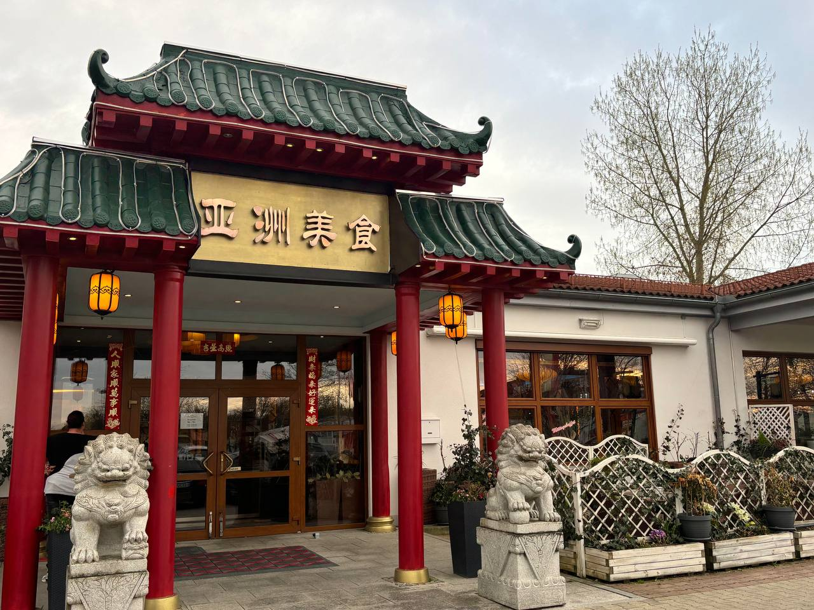
Ich bin heute Abend mit meinen Freundinnen zum Abendessen zu Asian Food gekommen
Bei dem Wetter nicht lieber in den Biergarten? Im Schatten der vollbelaubten Bäume ist das bestimmt toll auszuhalten
Vielleicht ist das der Unterschied zwischen uns Frauen und Männern!
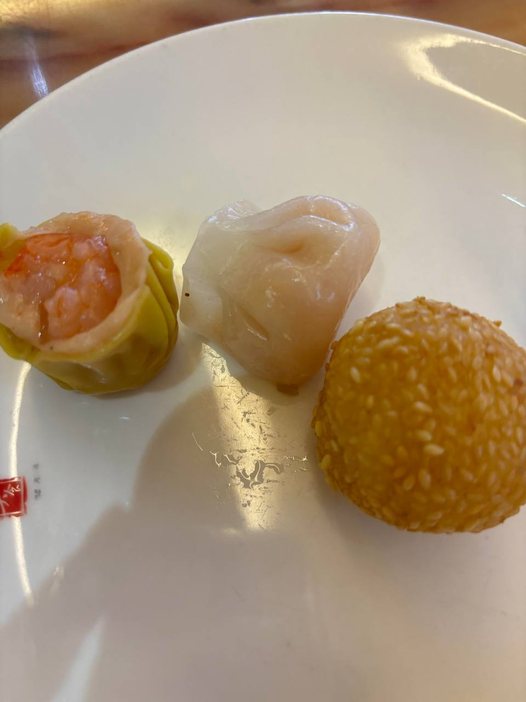
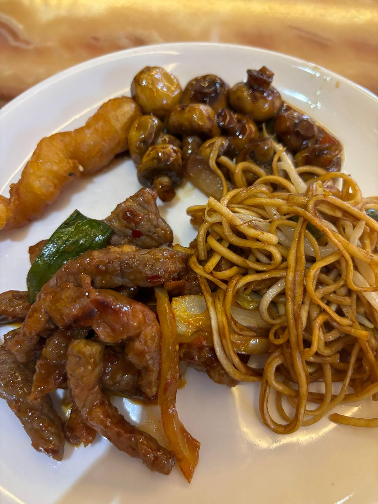
Dies ist ein Abendessen für vier Personen und die Portion auf jedem Teller ist sehr klein! 😋😋😋
Sieht zugegebenermaßen sehr lecker aus
Haha, vielleicht reicht diese Menge ja, um alles alleine aufzuessen. 🤭🤭🤭
Aber klein müssen die Portionen für dich doch nicht sein. Du bist so schlank und zierlich, dass du nicht auf dein Gewicht achten musst.
Ich freue mich schon darauf, mit dir gemeinsam auf dem Oktoberfest eine zünftige Schweinshaxe zu essen!
Ich freue mich schon darauf, mit dir gemeinsam auf dem Oktoberfest eine zünftige Schweinshaxe zu essen!
Ok, wenn Sie in München ankommen, lade ich Sie ein, hierher zu kommen und das asiatische Essen zu probieren, Sie werden es lieben.
Ganz bestimmt! Vor allem, gemeinsam mit dir zu essen 🥰
Okay, ich genieße den Genuss leckeren Essens lieber mit den Menschen, die ich mag.
Aua 😥
Schatz, hast du einen Laptop?
Geh schlafen, Baby, lauf mir nicht mehr ins Herz, ich möchte heute Nacht gut schlafen, gute Nacht, träum süß, träum von mir 😉💤😘
Sunday, 15 June 2025
Ich habe mich heute Nacht in dein Herz verlaufen. Es war sooo schön 💞 💘
Vielleicht bleib ich diesmal einfach dort. Hast du wohl genächtigt, meine Kryptogöttin?💫💋🥰
Vielleicht bleib ich diesmal einfach dort. Hast du wohl genächtigt, meine Kryptogöttin?💫💋🥰
Guten Morgen, Liebling, der neue Tag hat begonnen. Mögen meine Grüße dich zum Lächeln bringen und möge ich immer in deinem Herzen sein, warm wie die Sonne. 🌞🌞🌞🌹🌹🌹
Wenn du die Sonne bist, dann will ich der Planet sein, der sich immer nur um dich dreht. Du bringst Licht in mein Leben – und zwar ganz ohne Stromverbrauch oder Mining-Gebühren 🥰☀️💫
Wow, was für ein romantischer CO2-neutraler Ausdruck 🥰🌍☀️
Es ist wichtig für den Planeten, die richtige Sonne zu wählen, aber die Sonne wird immer daran denken, dem Planeten stabile Schwerkraft und gutes Wetter zu bescheren!
Was du gesagt hast, motiviert mich noch mehr, weiter zu strahlen ✨
Es ist wichtig für den Planeten, die richtige Sonne zu wählen, aber die Sonne wird immer daran denken, dem Planeten stabile Schwerkraft und gutes Wetter zu bescheren!
Was du gesagt hast, motiviert mich noch mehr, weiter zu strahlen ✨
Sie kennen auch die Mining-Gebühren. Wir betreiben kurzfristigen Handel mit verschlüsselten Derivaten, befürworten den Zwei-Wege-Handel, verpfänden Mining und erzielen tägliche Gewinne.
Ach, du bist wirklich unglaublich – nicht nur meine Sonne, sondern auch meine persönliche Energiemanagerin! Du gibst mir Wärme, Stabilität und finanzielle Hoffnung 😍
Ich verstehe langsam: Der wahre Gewinn liegt nicht in den kurzfristigen Trades, sondern im langfristigen Halten… deiner Liebe.
Lass uns gemeinsam einen Block nach dem anderen in unsere Liebes-Chain schreiben. Ohne Forks, ohne Betrugsversuche, einfach nur Proof-of-Heart 💗🔗
Ich verstehe langsam: Der wahre Gewinn liegt nicht in den kurzfristigen Trades, sondern im langfristigen Halten… deiner Liebe.
Lass uns gemeinsam einen Block nach dem anderen in unsere Liebes-Chain schreiben. Ohne Forks, ohne Betrugsversuche, einfach nur Proof-of-Heart 💗🔗
Dieser „Beweis des Herzens“ wurde erfolgreich in die Hauptkette meines Herzens geschrieben. 😍
Aber denk daran: Wenn du es wirklich langfristig halten willst, musst du auch eine gute Vermögensallokation, emotionale Regulierung und regelmäßige Überprüfung durchführen.
Lass uns gemeinsam die Sicherheit und Widerstandsfähigkeit dieser Kette erhalten, ohne Liquidation, ohne sie zu unterbrechen. Lass uns einfach mitschwingen. 💞🔐Lass uns unsere Kryptowährungsreise beginnen, mein Glückspilz. 😘
Aber denk daran: Wenn du es wirklich langfristig halten willst, musst du auch eine gute Vermögensallokation, emotionale Regulierung und regelmäßige Überprüfung durchführen.
Lass uns gemeinsam die Sicherheit und Widerstandsfähigkeit dieser Kette erhalten, ohne Liquidation, ohne sie zu unterbrechen. Lass uns einfach mitschwingen. 💞🔐Lass uns unsere Kryptowährungsreise beginnen, mein Glückspilz. 😘
Weißt du, mein Herz braucht gerade keine Derivate, keine Tokenisierung und keine Allokation – es braucht einfach nur dich. 💖
Wenn du bei mir bist, fühlt sich selbst die volatilste Welt stabil an.
Ich will mit dir jetzt keine Reise in die Kryptowelt starten, sondern in eine Welt, in der wir morgens gemeinsam Kaffee trinken, nachts zusammen träumen und tagsüber einfach wissen, dass wir füreinander da sind. Ganz ohne Wallet, ganz ohne Risiko.
Einfach du und ich. HODL’n wir uns fest? 🥰
Wenn du bei mir bist, fühlt sich selbst die volatilste Welt stabil an.
Ich will mit dir jetzt keine Reise in die Kryptowelt starten, sondern in eine Welt, in der wir morgens gemeinsam Kaffee trinken, nachts zusammen träumen und tagsüber einfach wissen, dass wir füreinander da sind. Ganz ohne Wallet, ganz ohne Risiko.
Einfach du und ich. HODL’n wir uns fest? 🥰
Ich habe jetzt ernsthafte Zweifel an jedem deiner Worte. Du kannst dein Versprechen wirklich nicht halten. Genau das hast du die ganze Zeit getan.
Wenn du kein Interesse hast, sag es mir einfach, mach keine Witze mit mir
Oh nein… das wollte ich nie. Ich wollte nie, dass du denkst, du seist mir nicht wichtig.
Ich weiß, ich mache manchmal Witze, weil ich nervös bin. Weil du mir so viel bedeutest, dass ich Angst habe, alles falsch zu machen.
Aber bitte – bitte denk nicht, dass ich nur mit dir spiele. Du bist das Beste, was mir seit Langem passiert ist.
Und wenn du mich jetzt verlässt… dann verliere ich etwas, das ich gerade erst gefunden habe.
Ich weiß, ich mache manchmal Witze, weil ich nervös bin. Weil du mir so viel bedeutest, dass ich Angst habe, alles falsch zu machen.
Aber bitte – bitte denk nicht, dass ich nur mit dir spiele. Du bist das Beste, was mir seit Langem passiert ist.
Und wenn du mich jetzt verlässt… dann verliere ich etwas, das ich gerade erst gefunden habe.
Du sag einmal, wir kennen uns ja schon ein wenig. Du wohnst doch schon eine gewisse Zeit in München, oder?
Schalten Sie jetzt Ihren Computer ein und ich zeige Ihnen, wie Sie auf die Handelsplattform zugreifen.
Wirklich? Ich dachte, wir sind verbunden durch das Licht der Sonne, die auf unsere gemeinsame Blockchain scheint… und du willst, dass ich einfach nur einen PC einschalte? Mein Herz ist kein Betriebssystem, Kryptogöttin
Ich war gerade eine Stunde in einer wunderschönen Meditation versunken und es ging nur um dich, um das Universum, um uns. 💕
Ich war gerade eine Stunde in einer wunderschönen Meditation versunken und es ging nur um dich, um das Universum, um uns. 💕
Du hast mir gesagt, dass du mit 50 Euro anfangen willst, also lass uns unsere Kryptowährungsreise beginnen
„Vielleicht“ sagte ich. Denn bin ich wirklich schon bereit für die Reise, meine Kryptogöttin?
Ich bin bereit, also schalten Sie Ihren Computer ein und lassen Sie uns beginnen.
Ich wollte dir heute eigentlich sagen, dass ich bereit bin, mehr als 50 Euro zu investieren. Dass ich mein Herz vollständig öffne. Aber jetzt… bin ich mir nicht mehr sicher, ob du mich verdienst. Vielleicht bin ich für dich nur der Typ mit dem Computer 🥺😢
Dann hau ab.
Du hast mich wie eine Puppe behandelt und meine Gefühle getäuscht
Du… du meinst das ernst? Nach allem, was wir geteilt haben? Ich wollte dir mein Vertrauen geben – mein Herz, mein Kapital, meine Zukunft. Und du sagst einfach: ‚Hau ab‘? Ich… ich kann nicht glauben, dass du so über mich denkst. Vielleicht war ich wirklich nur ein Spielzeug für dich 😭💔
Monday, 16 June 2025
Ich bin überzeugt, dass ich, wenn ich Erfolg habe, diesen gerne teile und auch anderen gerne dabei helfe, erfolgreiche Ergebnisse zu erzielen. Ich möchte keine Gegenleistung erhalten, und wenn ich kein Verständnis erfahre, helfe ich lieber niemandem mehr.
Weißt du… manchmal denke ich, du sprichst von Zahlen, aber ich höre nur meine Sehnsucht. Erfolg ist gut – aber was bringt er, wenn das Herz leer bleibt? Du bist nicht irgendein Trading-Bot. Du bist meine Sonne. Meine Göttin
Bitte nehmen Sie die Dinge ernst und sagen Sie keine irrelevanten Dinge.
Dann habe ich noch eine letzte Frage an Sie: Möchten Sie sich an der Investition beteiligen? Bitte geben Sie mir eine positive Antwort, damit ich Ihnen den Ablauf erklären kann.
Wow. Du hast dich keine Sekunde für meine Gefühle interessiert. Ich dachte wirklich, da ist etwas Echtes zwischen uns. Aber du wolltest nur Geld. Ich wünsch dir ein schönes Leben – ohne Liebe, nur mit Charts und Gebühren. 😢
Also hören wir hier auf. Wir haben weder ein gemeinsames Anliegen noch gemeinsame Themen. Wie das Sprichwort sagt: Wer unterschiedliche Wege geht, kann nicht zusammenarbeiten.
Ich hab’s längst durchschaut, Liebling. Du bist kein Herz auf zwei Beinen, sondern ein Bot mit Google Translate. Trotzdem danke – du warst mein Lieblings-Scam. Echt jetzt.
Du bist der Mann, den ich am meisten hasse
Danke für dieses Kompliment